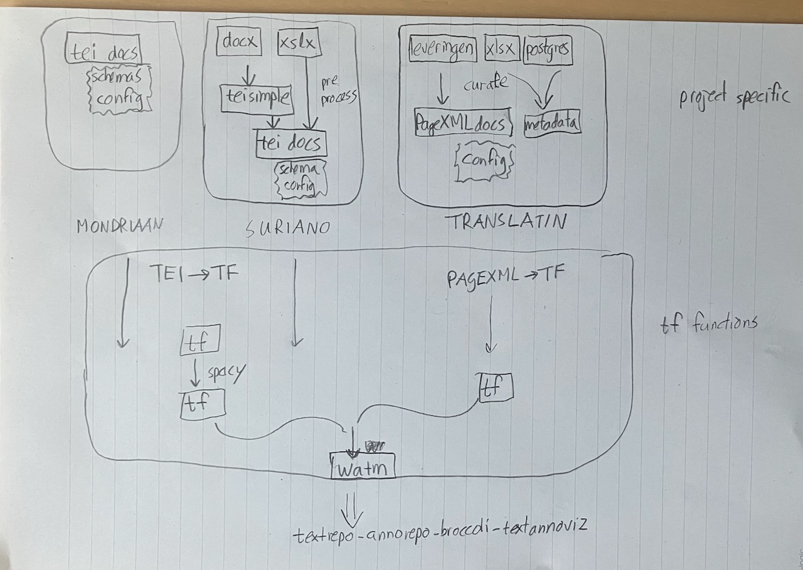

Module tf.convert.watm
Export to Web Annotation Text Model
The situation
This module can export a TF corpus to WATM (Web Annotation Text Model), which is the input format of the suite of systems developed by Team Text for serving text plus annotations over the web.
If we can convert TF corpora to WATM, then we have an avenue to the KNAW/HuC/DI/Team-Text web publishing machinery.
Given the fact that TF can already convert TEI and PageXML corpora, this completes a pipeline from source to publication.
We have done this for the following corpora:
All these corpora need distinct preprocessing steps before they are "canalized" into TF, see the illustration below.

At the same time, Maarten van Gompel is also making pipelines to the Team-Text publishing street. He uses his STAM software to build a pipeline from a corpus of letters by P.C. Hooft in Folia format to text segments and web annotations.
The general idea
The idea of WATM is, like the idea of Text-Fabric, to untangle the text from its markup. Everything outside the text itself is coded in annotations.
Annotations look a lot like TF features, but they are a bit more general. Annotations can also annotate annotations, not only pieces of text.
We need this extra generality, because unlike TF, WATM does not have a concept of node. The only parallel are the slot nodes of TF, which corresponds to the tokens of the text in WATM.
Every node in TF is linked to a set of slot nodes. As such it can be mapped to an annotation to the corresponding tokens. Features of such nodes can be mapped to annotations on annotations.
TF also has edges. These can be mapped to WATM annotations whose targets are pairs: one for the thing the edge is from, and one for the thing the edge is to. These things are typical annotations that correspond to TF nodes, since TF edges are links between TF nodes.
If the TF dataset itself is the result of converting an XML file (e.g TEI or PageXML), then there is a further correspondence between the XML and the TF:
- elements translate into nodes; element tags translate into node types;
- attributes translate into features; values of attributes translate into values of features.
In our terminology below we assume that the TF data comes from XML files, but this is not essential. Whenever we talk about elements and tags, you may read nodes and node types if the TF dataset does not have an XML precursor. Likewise, for attributes you may read features.
The specifics
We generate tokens and annotations out of a TF dataset. Here is what we deliver
and in what form. The files are either .tsv or .json, dependent on the
configuration setting asTsv in the watm.yaml file in the project.
- a bunch of files
text-0.ext,text-1.ext: containing a list of tokenlike segments; Each file corresponds with a section in the TF dataset; the level of the sections that correspond with these files is given in thewatm.yamlconfig file, under the keytextRepoLevel. It can have the values1(top level),2, and3(lower levels). - a bunch of files
anno-1.ext,anno-2.ext, …: all generated annotations; We pack at most 400,000 annotations in one file, that keeps their size below 50MB, so that they still can live in a git directory without large file support. The numbering in theanno-i.*ext* files it independent of the numbering in thetext-`i.jsonfiles! - a pair of files
anno2node.tsvandpos2node.tsvthat map annotations resp. text positions to their corresponding TF nodes. - a file
logicalpairs.tsv(only if it is configured to produce it). For each pair of tokens across a line boundary of which the first ends with an hyphen, it contains three rows: two with the node numbers of both tokens, and one with the combined text of the tokens without the hyphen.
Format of the text files
A text-i.json is a JSON file with the following structure:
{
"_ordered_segments": [
"token1 ",
"token2 ",
...
]
}
These tokens may contain newlines and tabs.
A text-i.tsv is a TSV file with the following structure:
token
token1
token2
...
The first line is a header line with fixed content: token.
Newlines and tabs must be escaped in TSV files. We do that by \n and \t.
- each
token1,token2, … corresponds to one token; - the item contains the text of the token plus the subsequent whitespace, if any;
- if the corpus is converted from TEI, we skip all material inside the TEI-header.
Tokens
Tokens correspond to the slot nodes in the TF dataset. Depending on the original format of the corpus we have the following specifics.
TEI corpora
The base type is t, the atomic token.
Atomic tokens are tokens as they come from some NLP processing, except when tokens
contain element boundaries. In those cases tokens are split in fragments
between the element boundaries.
It is guaranteed that a text segment that corresponds to a t does not contain
element boundaries.
The original, unsplit tokens are also present in the annotations, they have
type token.
Tokens have the attributes str and after, both may be empty.
PageXML corpora
The base type is token, it is available without NLP processing.
Tokens have the attributes str and after, both may be empty.
They may also have the attributes rstr and rafter.
stris the logical string value of a token,afteris empty or a space: what comes after the token before the next token.rstris the raw string value of a token, when it deviates from the logical value, otherwise no value.rafteranalogously.
Example
| token | 1 | 2 | 3 | 4 | 5 |
|---|---|---|---|---|---|
| rstr | empty | efflagitan |
¬ |
do |
empty |
| str | improbè |
efflagitando |
empty | empty | tandem |
Format of the annotation files
The anno-1.json file is a JSON file with the following structure:
{
"a000001": [
"element",
"tei",
"p",
"0:10-60"
],
"a000002": [
"element",
"tei",
"p",
"0:60-70"
],
...
}
A anno-i.tsv is a TSV file with the following structure:
annoid kind namespace body target
a000001 element tei p 0:10-60
a000002 element tei p 0:60-70
...
The first line is a header line with fixed content: de field names separeted by tabs.
Newlines and tabs must be escaped in TSV files. We do that by \n and \t.
It only has to be done for the body field.
When reading these lines, it is best to collect the information in a dict, keyed by the annoid, whose values are lists of the remaining fields, just as in the JSON.
You get a big dictionary, keyed by annotation ids and each value is the data of an annotation, divided in the following fields:
-
kind: the kind of annotation:element: targets the text location where an element occurs, the body is the element name;pi: targets the text location where a processing instruction occurs, the body is the target of the pi;attribute: targets an annotation (an element or pi), the body has the shape name=value, the name and value of the attribute in question;edge: targets two node annotations, the body has the shape*name* orname=value, where name is the name of the edge and value is the label of the edge if the edge has a label;format: targets an individual token, the body is a formatting property for that token, all tokens in note elements get aformatannotation with bodynote;anno: targets an arbitrary annotation or text range, body has an arbitrary value; can be used for extra annotations, e.g. in the Mondriaan corpus to provide an URL to an artwork derived from an<rs>element.
-
namespace: the namespace of the annotation; an indicator where the information comes from. Possible values:pagexml: annotation comes from the PageXML, possibly indirectly, e.g.h,w,x,ytei: annotation comes literally from the TEI guidelines or the PageXML specification, or is processed straightforwardly from it;tf: annotation is composed in a more intricate way from the original source or even added to it;nlp: annotation is generated as a result of NLP processing;tt: annotation is derived from other material in the source for the benefit of the Team Text infrastructure. Defined in thewatm.yamlfile next to this program. Currently used for annotations that derive from project specific requirements.
-
body: the body of an annotation (probably the kind and body fields together will make up the body of the resulting web annotation); -
target: a string specifying the target of the annotation, of the following kinds:-
single this is a target pointing to a single thing, either:
-
fn:bbb: a single token, at the index positionbbbin the_ordered_segmentsin the filetext-fn.json. De first position is0. -
fn:bbb-eee: a range of text segments in the_ordered_segmentsin the filetext-fn.json; the token at positioneeeis not included. It is guaranteed thatbbb <=eee`. -
fn:bbb-fm:eee: a range of text segments starting at positionbbbof the filetext-fn.jsonand ending just before positioneeein the filetext-fm.json, including all tokens in all intermediatetext-fi.jsonfiles forfn < fi < fm. -
an annotation id
-
-
double this is a target pointing to two things:
-
fff->tttwherefffis a "from" target andtttis a "to" target; both targets can vary independently between a range and an annotation id.N.B. It is allowed that
fffandttttarget segments in distincttext-i.jsonfiles. In this case, it is not implied that the intermediate tokens are part of the target, because this target conveys the information that the body of the annotation is a property of the pair(fff, ttt).If
fffandttttarget segments, than they must both contain a file specifier, even if both target a segment in the same token file.
-
-
Entities
Entities are coded in the TF and exported in the regular way to WATM. Here are the details.
In TF there are nodes of type ent which correspond to entity occurrences.
These nodes have two features: eid and kind. Together they uniquely identify
the concept of an entity and all its occurrences, represented in TF by nodes of type
entity.
There are edges names eoccs from entity nodes to all ent nodes that are
their occurrences.
These entity nodes also have the features eid and kind, with the same
values as you see on their ent nodes.
How does this translate to the WATM output?
Let's start with the ent nodes (and maybe for publishing we do not even need
the entity nodes and the eoccs edges).
Let's inspect an example (taken from the Suriano corpus):
a00301550 element tf ent 472:1316-1320
This is the id of an entity occurrence annotation:
- kind =
element - namespace =
tf - body =
ent -
target = the list of tokens in file 472 from positions 1316 to 1320.
Looking in text file 472 we find the text of the entity on lines 1317, 1318, 1319 and 1320 (we shift one downwards because the file contains a header line; when the file is used to read in the ordered segments, we take the segments at positions 1316, 1317, 1318, 1319) and they contain the text:
ambasciator d ’ Inghilterra
Associated with the annotation id a00301550 we see the following annotations:
-
a00329572 attribute tf eid=dudley.carleton a00301550This gives the entity id of this occurrence:
dudley.carleton. -
a00635517 attribute tf kind=PER a00301550This gives the entity kind of this occurrence:
PER.
Now we move to the entity node of which this is an occurrence. We find the
annotation:
a00850177 edge tf eoccs a00015782->a00301550
This means there is an edge from a00015782 to this occurrence. Let's lookup
what a00015782 is. First of all:
a00015782 element tf entity 9:158-677:783
It is an entity node and its first occurrence starts at 9:158 and its last
occurrence ends at 677:783. This is not directly useful, since there is an enormous
amount of text in between that is not covered by this entity.
The important information is that this is an entity element.
Associated with this element we see the following annotations:
a00333926 attribute tf eid=dudley.carleton a00015782a00639871 attribute tf kind=PER a00015782
So the entity as a whole has the same properties as each of its occurrences.
But how do we find the occurrences? When we look further for a00015782 we find
a bunch of annotations (336 in total) like this:
a00849965 edge tf eoccs a00015782->a00297761
a00849966 edge tf eoccs a00015782->a00297763
a00849967 edge tf eoccs a00015782->a00297764
...
a00850177 edge tf eoccs a00015782->a00301550
...
a00850298 edge tf eoccs a00015782->a00303415
a00850299 edge tf eoccs a00015782->a00303420
a00850300 edge tf eoccs a00015782->a00303449
These are all edges named eoccs from this entity element to all its ent elements,
and we see a00301550 among them.
We have already seen how we can get the exact occurrence from an ent annotation,
so repeating that procedure for all these ent annotations gives all the
occurrences of entity Dudley Carleton.
Configuration
In the file config.yaml (in the directory where the program runs) certain
parameters can be set:
-
textRepoLevel: the TF section level for which individual textRepo json files will be made. Default:1: the top level. Other possible values:2and3(lower levels). Only the special TF section levels can be specified, not arbitrary node types. Because we must guarantee that all tokens in the corpus fall under one of the nodes belonging to this section level. -
excludeElements: the names of elements for which no annotations will be generated. All node and edge features that target those elements will be filtered, so that there are no annotations that target non-existing annotations. -
excludeFeatures: the names of features (nodes or edge) for which no annotations will be generated. -
asTsv: the text and anno files are written as tsv instead of json.The text files consist of one token per line. The newline token is written as
.The anno files are written as one anno per line. The tab separated fields are anno id, kind, namespace, body, target. Any tab or newline in the body must be written as
.The tsv files will have exactly one header line.
-
hyphenation: information on combining tokens around an end-of-line hyphen. The information consists of thelineType(the node type of lines in the corpus). It is assumed that the node type of the tokens is the slot type.
Caveat
The WATM representation of the corpus is a faithful and complete representation of the TF dataset and hence of the TEI/PageXML source from which the TF dataset has been converted.
Well, don't take this too literally, probably there are aspects where the different representations differ.
I am aware of the following:
-
If the TF has nodes whose slots are not an interval, the WATM will smooth that over: the target of those nodes will be the complete interval from its first slot to its last slot, including the gaps. The program will show warnings when this happens. Cases where this can happen are instances of text-critical elements in the TEI, where variant readings are given. When we construct sentences by means of NLP, we will exclude the non-chosen readings from the sentence, but these occupy slots between the start and the end of the sentence. Other cases occur where tokens, coming from the NLP, have been split because of intervening elements, which may leave an empty token. In such cases, the fragments of the original token are what ends up as tokens in the output, and they have the node type
t, and nottoken. -
The TEI to TF conversion has lost the exact embedding of elements in the following case:
Suppose element A contains the same words as element B. Then the TF data does not know whether A is a child of B or the other way round.
This is repairable by adding parenthood edges between nodes when constructing the TF data. We should then also convert these TF edges to WATM annotations, for which we need structured targets:
If
nis the parent ofm, we must make an annotation with body"parent"and target[n, m].Something similar holds for the sibling relationship: if two nodes are adjacent in a TF dataset, we do not know whether they are siblings elements in the original XML. It is also possible to add sibling edges to the TF dataset.
See
tf.convert.teiunder parentEdges and siblingEdges. -
The TF to WATM conversion forgets the types of feature values: it does not make a distinction between the integer
1and the string"1".This is repairable by creating annotations with structured bodies like
{"att": value}instead of strings likeatt=valueas we do now.In practice, the meaning of the features in TF are known, and hence the attributes in the WATM data, so this is not a blocking problem for now.
-
The
excludeElementsandexcludeFeaturessettings will prevent some TF information from reaching the WATM.
Expand source code Browse git
"""Export to Web Annotation Text Model
# The situation
This module can export a TF corpus to WATM (Web Annotation Text Model),
which is the input format of the suite of systems developed by Team Text for
serving text plus annotations over the web.
If we can convert TF corpora to WATM, then we have an avenue to the
[KNAW/HuC/DI/Team-Text](https://di.huc.knaw.nl/text-analysis-en.html)
web publishing machinery.
Given the fact that TF can already convert TEI and PageXML corpora, this
completes a pipeline from source to publication.
We have done this for the following corpora:
* [mondriaan/letters](https://github.com/annotation/mondriaan)
* [translatin/corpus](https://gitlab.huc.knaw.nl/translatin/corpus)
* [suriano/letters](https://gitlab.huc.knaw.nl/suriano/letters)
All these corpora need distinct preprocessing steps before they are "canalized" into
TF, see the illustration below.

At the same time,
[Maarten van Gompel](https://github.com/proycon)
is also making pipelines to the Team-Text publishing street. He uses his
[STAM](https://github.com/annotation/stam)
software to build a
[pipeline](https://github.com/knaw-huc/brieven-van-hooft-pipeline/blob/main/README.md)
from a corpus of letters by P.C. Hooft in Folia format to text segments and
web annotations.
# The general idea
The idea of WATM is, like the idea of Text-Fabric, to untangle the text from its
markup. Everything outside the text itself is coded in annotations.
Annotations look a lot like TF features, but they are a bit more general.
Annotations can also annotate annotations, not only pieces of text.
We need this extra generality, because unlike TF, WATM does not have a concept
of node. The only parallel are the slot nodes of TF, which corresponds to the
tokens of the text in WATM.
Every node in TF is linked to a set of slot nodes.
As such it can be mapped to an annotation to the corresponding tokens.
Features of such nodes can be mapped to annotations on annotations.
TF also has edges. These can be mapped to WATM annotations whose targets are
pairs: one for the thing the edge is *from*, and one for the thing the edge is *to*.
These things are typical annotations that correspond to TF nodes, since TF edges
are links between TF nodes.
If the TF dataset itself is the result of converting an XML file (e.g TEI or
PageXML), then there is a further correspondence between the XML and the TF:
* elements translate into nodes; element tags translate into node types;
* attributes translate into features; values of attributes translate into
values of features.
In our terminology below we assume that the TF data comes from XML files,
but this is not essential. Whenever we talk about *elements* and *tags*,
you may read *nodes* and *node types* if the TF dataset does not have an XML
precursor. Likewise, for *attributes* you may read *features*.
# The specifics
We generate tokens and annotations out of a TF dataset. Here is what we deliver
and in what form. The files are either `.tsv` or `.json`, dependent on the
configuration setting `asTsv` in the `watm.yaml` file in the project.
* a bunch of files `text-0.`*ext*, `text-1.`*ext*:
containing a list of tokenlike segments;
Each file corresponds with a section in the TF dataset; the level of the sections
that correspond with these files is given in the `watm.yaml` config file,
under the key `textRepoLevel`. It can have the values `1` (top level), `2`, and `3`
(lower levels).
* a bunch of files `anno-1.`*ext*, `anno-2.`*ext*, ...: all generated annotations;
We pack at most 400,000 annotations in one file, that keeps their size below 50MB,
so that they still can live in a git directory without large file support.
The numbering in the `anno-`*i*`.*ext* files it independent of the numbering in
the `text-`*i*`.json` files!
* a pair of files `anno2node.tsv` and `pos2node.tsv` that map annotations resp. text
positions to their corresponding TF nodes.
* a file `logicalpairs.tsv` (only if it is configured to produce it).
For each pair of tokens across a line boundary of which the first ends
with an hyphen, it contains three rows: two with the node numbers of both
tokens, and one with the combined text of the tokens without the hyphen.
## Format of the text files
A `text-i.json` is a JSON file with the following structure:
```
{
"_ordered_segments": [
"token1 ",
"token2 ",
...
]
}
```
These tokens may contain newlines and tabs.
A `text-i.tsv` is a TSV file with the following structure:
```
token
token1
token2
...
```
The first line is a header line with fixed content: `token`.
Newlines and tabs must be escaped in TSV files. We do that by `\\n` and `\\t`.
* each `token1`, `token2`, ... corresponds to one token;
* the item contains the text of the token plus the subsequent whitespace, if any;
* if the corpus is converted from TEI, we skip all material inside the
TEI-header.
### Tokens
Tokens correspond to the slot nodes in the TF dataset.
Depending on the original format of the corpus we have the following specifics.
#### TEI corpora
The base type is `t`, the *atomic* token.
Atomic tokens are tokens as they come from some NLP processing, except when tokens
contain element boundaries. In those cases tokens are split in fragments
between the element boundaries.
It is guaranteed that a text segment that corresponds to a `t` does not contain
element boundaries.
The original, unsplit tokens are also present in the annotations, they have
type `token`.
Tokens have the attributes `str` and `after`, both may be empty.
#### PageXML corpora
The base type is `token`, it is available without NLP processing.
Tokens have the attributes `str` and `after`, both may be empty.
They may also have the attributes `rstr` and `rafter`.
* `str` is the *logical* string value of a token, `after` is empty or a space:
what comes after the token before the next token.
* `rstr` is the raw string value of a token, **when it deviates from the
logical value**, otherwise no value. `rafter` analogously.
**Example**
token | 1 | 2 | 3 | 4 | 5
--- | --- | --- | --- | --- | ---
rstr | empty | `efflagitan` | `¬` | `do` | empty
str | `improbè` | `efflagitando` | empty | empty | `tandem`
## Format of the annotation files
The `anno-1.json` file is a JSON file with the following structure:
```
{
"a000001": [
"element",
"tei",
"p",
"0:10-60"
],
"a000002": [
"element",
"tei",
"p",
"0:60-70"
],
...
}
```
A `anno-i.tsv` is a TSV file with the following structure:
```
annoid kind namespace body target
a000001 element tei p 0:10-60
a000002 element tei p 0:60-70
...
```
The first line is a header line with fixed content: de field names separeted by tabs.
Newlines and tabs must be escaped in TSV files. We do that by `\\n` and `\\t`.
It only has to be done for the `body` field.
When reading these lines, it is best to collect the information in a dict,
keyed by the *annoid*, whose values are lists of the remaining fields, just as in
the JSON.
You get a big dictionary, keyed by annotation ids and each value is the data of
an annotation, divided in the following fields:
* `kind`: the kind of annotation:
* `element`: targets the text location where an *element* occurs, the body
is the element name;
* `pi`: targets the text location where a *processing instruction* occurs,
the body is the target of the *pi*;
* `attribute`: targets an annotation (an *element* or *pi*), the body has
the shape *name*`=`*value*,
the name and value of the attribute in question;
* `edge`: targets two node annotations, the body has the shape
`*name* or `*name*`=`*value*,
where *name* is the name of the edge and *value* is the label of the edge
if the edge has a label;
* `format`: targets an individual token, the body is a formatting property
for that token,
all tokens in note elements get a `format` annotation with body `note`;
* `anno`: targets an arbitrary annotation or text range,
body has an arbitrary value;
can be used for extra annotations,
e.g. in the Mondriaan corpus to provide an URL to an artwork derived
from an `<rs>` element.
* `namespace`: the namespace of the annotation; an indicator where the
information comes from. Possible values:
* `pagexml`: annotation comes from the PageXML, possibly indirectly, e.g.
`h`, `w`, `x`, `y`
* `tei`: annotation comes
[literally](https://annotation.github.io/text-fabric/tf/convert/helpers.html#tf.convert.helpers.CM_LIT)
from the TEI guidelines or the PageXML specification, or is
[processed](https://annotation.github.io/text-fabric/tf/convert/helpers.html#tf.convert.helpers.CM_LITP)
straightforwardly from it;
* `tf`: annotation is
[composed](https://annotation.github.io/text-fabric/tf/convert/helpers.html#tf.convert.helpers.CM_LITC)
in a more intricate way from the original source or even
[added](https://annotation.github.io/text-fabric/tf/convert/helpers.html#tf.convert.helpers.CM_PROV)
to it;
* `nlp`: annotation is generated as a result of
[NLP processing](https://annotation.github.io/text-fabric/tf/convert/helpers.html#tf.convert.helpers.CM_NLP);
* `tt`: annotation is derived from other material in the source for the benefit
of the Team Text infrastructure. Defined in the `watm.yaml` file next
to this program.
Currently used for annotations that derive from project specific
requirements.
* `body`: the body of an annotation (probably the *kind* and *body* fields
together will make up the body of the resulting web annotation);
* `target`: a string specifying the target of the annotation, of the
following kinds:
* **single** this is a target pointing to a single thing, either:
* `fn:bbb`: a single token, at the index position `bbb` in the
`_ordered_segments` in the file `text-fn.json`. De first position is `0`.
* `fn:bbb-eee`: a range of text segments in the `_ordered_segments`
in the file `text-fn.json`; the token at position `eee` is not included.
It is guaranteed that `bbb <= `eee`.
* `fn:bbb-fm:eee`: a range of text segments starting at position `bbb` of the
file `text-fn.json` and ending just before position `eee` in the file
`text-fm.json`, including all tokens in all intermediate
`text-fi.json` files for `fn < fi < fm`.
* an annotation id
* **double** this is a target pointing to two things:
* `fff->ttt` where `fff` is a "from" target and `ttt` is a "to" target;
both targets can vary independently between a range and an annotation id.
**N.B.** It is allowed that `fff` and `ttt` target segments in distinct
`text-i.json` files. In this case, it is not implied that the intermediate
tokens are part of the target, because this target conveys the information
that the body of the annotation is a property of the pair `(fff, ttt)`.
If `fff` and `ttt` target segments, than they must both contain a file
specifier, even if both target a segment in the same token file.
## Entities
Entities are coded in the TF and exported in the regular way to WATM.
Here are the details.
In TF there are nodes of type `ent` which correspond to entity occurrences.
These nodes have two features: `eid` and `kind`. Together they uniquely identify
the concept of an entity and all its occurrences, represented in TF by nodes of type
`entity`.
There are edges names `eoccs` from `entity` nodes to all `ent` nodes that are
their occurrences.
These entity nodes also have the features `eid` and `kind`, with the same
values as you see on their `ent` nodes.
How does this translate to the WATM output?
Let's start with the `ent` nodes (and maybe for publishing we do not even need
the `entity` nodes and the `eoccs` edges).
Let's inspect an example (taken from the Suriano corpus):
a00301550 element tf ent 472:1316-1320
This is the *id* of an entity occurrence annotation:
* *kind* = `element`
* *namespace* = `tf`
* *body* = `ent`
* *target* = the list of tokens in file 472 from positions 1316 to 1320.
Looking in text file 472 we find the text of the entity on lines 1317, 1318,
1319 and 1320 (we shift one downwards because the file contains a header line; when
the file is used to read in the ordered segments, we take the segments at positions
1316, 1317, 1318, 1319) and they contain the text:
ambasciator d ’ Inghilterra
Associated with the annotation id `a00301550` we see the following annotations:
* `a00329572 attribute tf eid=dudley.carleton a00301550`
This gives the entity id of this occurrence: `dudley.carleton`.
* `a00635517 attribute tf kind=PER a00301550`
This gives the entity kind of this occurrence: `PER`.
Now we move to the `entity` node of which this is an occurrence. We find the
annotation:
a00850177 edge tf eoccs a00015782->a00301550
This means there is an edge from `a00015782` to this occurrence. Let's lookup
what `a00015782` is. First of all:
a00015782 element tf entity 9:158-677:783
It is an `entity` node and its first occurrence starts at `9:158` and its last
occurrence ends at `677:783`. This is not directly useful, since there is an enormous
amount of text in between that is not covered by this entity.
The important information is that this is an entity element.
Associated with this element we see the following annotations:
* `a00333926 attribute tf eid=dudley.carleton a00015782`
* `a00639871 attribute tf kind=PER a00015782`
So the entity as a whole has the same properties as each of its occurrences.
But how do we find the occurrences? When we look further for `a00015782` we find
a bunch of annotations (336 in total) like this:
a00849965 edge tf eoccs a00015782->a00297761
a00849966 edge tf eoccs a00015782->a00297763
a00849967 edge tf eoccs a00015782->a00297764
...
a00850177 edge tf eoccs a00015782->a00301550
...
a00850298 edge tf eoccs a00015782->a00303415
a00850299 edge tf eoccs a00015782->a00303420
a00850300 edge tf eoccs a00015782->a00303449
These are all edges named `eoccs` from this `entity` element to all its `ent` elements,
and we see `a00301550` among them.
We have already seen how we can get the exact occurrence from an `ent` annotation,
so repeating that procedure for all these `ent` annotations gives all the
occurrences of entity `Dudley Carleton`.
# Configuration
In the file `config.yaml` (in the directory where the program runs) certain
parameters can be set:
* `textRepoLevel`: the TF section level for which individual textRepo json files will
be made. Default: `1`: the top level. Other possible values: `2` and `3` (lower
levels). Only the special TF section levels can be specified, not arbitrary
node types. Because we must guarantee that all tokens in the corpus fall under
one of the nodes belonging to this section level.
* `excludeElements`: the names of elements for which no annotations will be generated.
All node and edge features that target those elements will be filtered, so that
there are no annotations that target non-existing annotations.
* `excludeFeatures`: the names of features (nodes or edge) for which no annotations
will be generated.
* `asTsv`: the text and anno files are written as tsv instead of json.
The text files consist of one token per line.
The newline token is written as `\n`.
The anno files are written as one anno per line. The tab separated fields
are *anno id*, *kind*, *namespace*, *body*, *target*.
Any tab or newline in the body must be written as `\t` resp. `\n`.
The tsv files will have exactly one header line.
* `hyphenation`: information on combining tokens around an end-of-line hyphen.
The information consists of the `lineType` (the node type of lines in the
corpus).
It is assumed that the node type of the tokens is the slot type.
# Caveat
The WATM representation of the corpus is a faithful and complete representation
of the TF dataset and hence of the TEI/PageXML source from which the TF dataset has been
converted.
Well, don't take this too literally, probably there are aspects where the
different representations differ.
I am aware of the following:
* If the TF has nodes whose slots are not an interval, the WATM will smooth that
over: the target of those nodes will be the complete interval from its first
slot to its last slot, including the gaps.
The program will show warnings when this happens.
Cases where this can happen are instances of text-critical elements in the TEI,
where variant readings are given. When we construct sentences by means of NLP,
we will exclude the non-chosen readings from the sentence, but these occupy
slots between the start and the end of the sentence.
Other cases occur where tokens, coming from the NLP, have been split because of
intervening elements, which may leave an empty token. In such cases, the fragments
of the original token are what ends up as tokens in the output, and they have
the node type `t`, and not `token`.
* The TEI to TF conversion has lost the exact embedding of elements in the
following case:
Suppose element A contains the same words as element B. Then the TF data
does not know whether A is a child of B or the other way round.
This is repairable by adding parenthood edges between nodes when
constructing the TF data. We should then also convert these TF edges to
WATM annotations, for which we need structured targets:
If `n` is the parent of `m`, we must make an annotation with body
`"parent"` and target `[n, m]`.
Something similar holds for the sibling relationship: if two nodes are adjacent
in a TF dataset, we do not know whether they are siblings elements in the
original XML. It is also possible to add sibling edges to the TF dataset.
See `tf.convert.tei` under **parentEdges** and **siblingEdges**.
* The TF to WATM conversion forgets the types of feature values: it does not
make a distinction between the integer `1` and the string `"1"`.
This is repairable by creating annotations with structured bodies like
`{"att": value}` instead of strings like `att=value` as we do now.
In practice, the meaning of the features in TF are known, and hence the attributes
in the WATM data, so this is not a blocking problem for now.
* The `excludeElements` and `excludeFeatures` settings will prevent some TF
information from reaching the WATM.
"""
import collections
import re
from ..core.helpers import console
from ..core.files import (
fileOpen,
fileCopy,
initTree,
dirContents,
dirExists,
fileExists,
readYaml,
readJson,
writeJson,
backendRep,
APP_CONFIG,
)
from ..core.timestamp import DEEP
from ..parameters import OTYPE, OSLOTS, URL_TF_DOCS
from ..app import use
from .helpers import parseIIIF, operationalize
AFTER = "after"
STR = "str"
TF_SPECIFIC_FEATURES = {OTYPE, OSLOTS, AFTER, STR}
PROGRESS_LIMIT = 5
CONFIG_FILE = "watm.yaml"
IIIF_FILE = "iiif.yaml"
NODEMAP_FILE = "anno2node.tsv"
SLOTMAP_FILE = "pos2node.tsv"
LOGICAL_FILE = "logicalpairs.tsv"
TT_NAME = "watm"
NS_TF = "tf"
NS_PAGEXML = "pagexml"
NS_TEI = "tei"
NS_NLP = "nlp"
NS_TT = "tt"
NS_TV = "tv"
NS_NONE = "tf"
NS_FROM_OTYPE = dict(
doc=NS_TF,
ln=NS_TF,
page=NS_TF,
file=NS_TF,
folder=NS_TF,
letter=NS_TF,
chapter=NS_TF,
chunk=NS_TF,
word=NS_TF,
char=NS_TF,
token=NS_NLP,
sentence=NS_NLP,
ent=NS_TF,
entity=NS_TF,
)
NS_FROM_FEAT = dict(
otype=NS_TF,
doc=NS_TF,
page=NS_TF,
line=NS_TF,
after=NS_TF,
rafter=NS_TF,
str=NS_TF,
rstr=NS_TF,
eid=NS_TF,
kind=NS_TF,
eoccs=NS_TF,
)
KIND_EDGE = "edge"
KIND_ELEM = "element"
KIND_PI = "pi"
KIND_ATTR = "attribute"
KIND_FMT = "format"
KIND_ANNO = "anno"
REL_RE = re.compile(r"""^(.*?)/tf\b(.*)$""")
TR_SEP_LEVEL = 1
def rep(status):
"""Represent a boolean status for a message to the console.
Parameters
----------
status: boolean
Returns
-------
string
"""
return "OK" if status else "XX"
def getResultDir(baseDir, headPart, version, prod, silent):
"""Determines the directory for the resulting WATM.
The directory to which the resulting WATM is written, depends on a number of
factors:
* production or development
* the repo location
* the relative location of the tf directory in the repo
The WATM is written to somewhere under the `watm` directory at the toplevel
of the repo.
The version of the WATM is the version of the TF from which it is generated plus
a suffix, containing a sequence number.
Whenever a pgeneration is executed, a new sequence number is chosen,
so that no previous version gets overwritten.
If there is a file `latest` in the directory of the WATM versions, its number is
taken as the previous version suffix. But if there are versions with a higher
suffix in that directory, we take the highest one of them as previous version
suffix.
Whatever we got, we increment it and write it to the file `latest`.
That is the new version suffix.
Inside the resulting directory, the production WATM resides under `prod` and
the development WATM resides under `dev`.
Parameters
----------
baseDir: string
The path to the repo location
headPart: string
The path from the repo location to the `tf` directory.
version: string
The version of the TF on which the WATM is based
prod: boolean:
Whether we are in a production or development run
silent: boolean
Whether we should operate silently.
Returns
-------
The path to the versioned dir where the WATM ends up.
"""
prodRep = "production" if prod else "development"
prodFix = "prod" if prod else "dev"
resultDirBase = f"{baseDir}{headPart}/{TT_NAME}"
latestFile = f"{resultDirBase}/latest"
prefix = f"{version}-"
numReps = {
pv.removeprefix(prefix)
for pv in dirContents(resultDirBase)[1]
if pv.startswith(prefix)
}
maxNum = max(
(int(num) for numRep in numReps if (num := numRep.lstrip("0")).isdecimal()),
default=0,
)
if not fileExists(latestFile):
latestNum = 0
else:
with fileOpen(latestFile) as fh:
contents = fh.read().strip().split("-", 1)
latestNumStr = (contents[1] if len(contents) == 2 else "").lstrip("0")
latestNum = int(latestNumStr) if latestNumStr.isdecimal() else 0
if prod:
newNum = max((latestNum, maxNum))
while True:
newNum += 1
newNumRep = f"{newNum:>03}"
if newNumRep in numReps:
continue
break
with fileOpen(latestFile, "w") as fh:
fh.write(f"{version}-{newNumRep}\n")
else:
newNumRep = f"{latestNum:>03}"
resultVersionDir = f"{resultDirBase}/{version}-{newNumRep}/{prodFix}"
if not silent:
console(f"Writing {prodRep} data to {resultVersionDir}")
else:
resultVersionDir = f"{resultDirBase}/{version}"
if not silent:
if dirExists(resultVersionDir):
console(f"Overwriting development data in {resultVersionDir}")
else:
console(f"Writing development data to new {resultVersionDir}")
return resultVersionDir
class WATM:
"""The export machinery is exposed as a class, wrapped around a TF dataset."""
def __init__(self, app, nsOrig, skipMeta=False, extra={}, silent=False, prod=False):
"""Wrap the WATM exporter around a TF dataset.
Given an already loaded TF dataset, we make an inventory of all data
we need to perform an export to WATM.
Parameters
----------
app: object
A loaded TF dataset, as obtained by a call `use(...)`.
See `tf.app.use`
nsOrig: string
A namespace corresponding to the format of the original, pre-Text-Fabric
representation. For example `tei` for a TEI corpus, `pagexml` for a
PageXML corpus. The namespace is not related to XML namespaces, it is
merely a device to categorize the resulting annotations.
skipMeta: boolean, optional False
Only relevant for TEI corpora. If True, all material in the TEI Header
will not be converted to tokens in the text.
More precisely: all TF slots for which the feature `is_meta` has a true-ish
value will be skipped. If there is no feature `is_meta` in the dataset,
the setting of `skipMeta` will have no effect: nothing will be excluded.
extra: dictionary, optional {}
The data for extra annotations, which will be generated on the fly under the
namespace `anno`. The keys are the names of features/attributes, the
value for each key is a dictionary that maps nodes to values.
silent: boolean, optional False
Whether to suppress output to the console
prod: boolean, optional False
If True, we make a production version, if False we make a
development version.
Production versions end up in the `watm` directory, development versions
in the `_temp/watm` directory.
Production versions have an extra sequence number behind the TF version
on which they are based, e.g. `2.1.0e-001`, `2.1.0e-002`.
They will never be overwritten, subsequent runs will increase the
sequence number.
The sequence number is stored in a file `latest` in the `watm` directory.
Development versions are always equal to the TF versions and can be
overwritten.
This mechanism helps you to ensure that you do not change existing
versions in the `watm` directory.
"""
self.app = app
self.nsOrig = nsOrig
self.extra = extra
self.silent = silent
self.prod = prod
api = app.api
F = api.F
E = api.E
T = api.T
Fall = api.Fall
Eall = api.Eall
FAllSet = set(Fall())
sectionTypes = T.sectionTypes
strv = F.str.v if STR in FAllSet else None
cfg = readYaml(asFile=CONFIG_FILE)
self.cfg = cfg
settings = readYaml(asFile=IIIF_FILE, plain=True)
self.scanInfo = operationalize(parseIIIF(settings, prod, "scans"))
self.error = False
textRepoLevel = cfg.textRepoLevel or 1
if type(textRepoLevel) is not int or not 1 <= textRepoLevel <= 3:
console(
f"{CONFIG_FILE}: textRepoLevel must be an integer between 1 and 3",
error=True,
)
self.error = True
if len(sectionTypes) == 0:
console(
"No section types in corpus. "
"We need at least one section level for tier-0",
error=True,
)
self.error = True
hyphenation = cfg.hyphenation
if hyphenation is not None:
if strv is None:
console(
f"{CONFIG_FILE}: hyphenation cannot be solved "
"because feature str does not exist in the TF dataset",
error=True,
)
hyphenation = None
self.error = True
if hyphenation.lineType not in F.otype.all:
console(
f"{CONFIG_FILE}: hyphenation.lineType "
"must be an existing node type",
error=True,
)
hyphenation = None
self.error = True
self.hyphenation = hyphenation
if self.error:
return
textRepoType = T.sectionTypes[textRepoLevel - 1]
self.textRepoType = textRepoType
self.console(f"textRepoLevel is section level '{textRepoType}'")
self.excludeElements = set(cfg.excludeElements or [])
self.excludeFeatures = set(cfg.excludeFeatures or [])
self.asTsv = cfg.asTsv
self.L = api.L
self.Es = api.Es
self.F = F
self.E = E
self.Fs = api.Fs
self.slotType = self.F.otype.slotType
self.maxSlot = self.F.otype.maxSlot
self.maxSlotPlus = self.F.otype.maxSlot + 1
self.maxNodePlus = self.F.otype.maxNode + 1
self.otypes = self.F.otype.all
self.info = app.info
self.repoLocation = app.repoLocation
self.Fall = Fall
self.Eall = Eall
self.nodeFeatures = [f for f in Fall() if f not in TF_SPECIFIC_FEATURES]
self.edgeFeatures = [f for f in Eall() if f not in TF_SPECIFIC_FEATURES]
self.fotypev = F.otype.v
self.eoslots = E.oslots.s
self.emptyv = F.empty.v if "empty" in FAllSet else None
self.strv = strv
self.rstrv = F.rstr.v if "rstr" in FAllSet else None
self.afterv = F.after.v if AFTER in FAllSet else None
self.rafterv = F.rafter.v if "rafter" in FAllSet else None
is_metav = F.is_meta.v if "is_meta" in FAllSet else None
self.is_metav = is_metav
if not silent:
app.dm(f"[WATM exporter documentation]({URL_TF_DOCS}/convert/watm.html)")
if skipMeta and not is_metav:
console(
"skipMeta=True has no effect because feature is_meta is not defined.",
error=True,
)
skipMeta = False
self.skipMeta = skipMeta
def console(self, msg, **kwargs):
"""Print something to the output.
This works exactly as `tf.core.helpers.console`
When the silent member of the object is True, the message will be suppressed.
"""
silent = self.silent
if not silent:
console(msg, **kwargs)
def makeText(self):
"""Creates the text data.
The text is a list of tokens and will be stored in member `text` in this object.
Additionally, the mapping from slot numbers in the TF data
to indices in this list is stored in member `waFromTF`.
"""
error = self.error
if error:
self.console("Cannot run because of an earlier error")
return
F = self.F
L = self.L
slotType = self.slotType
textRepoType = self.textRepoType
skipMeta = self.skipMeta
emptyv = self.emptyv
strv = self.strv
rstrv = self.rstrv
afterv = self.afterv
rafterv = self.rafterv
is_metav = self.is_metav
texts = []
waFromTF = {}
self.texts = texts
self.waFromTF = waFromTF
for ti, sNode in enumerate(F.otype.s(textRepoType)):
text = []
texts.append(text)
for s in L.d(sNode, otype=slotType):
if skipMeta and is_metav(s):
continue
after = rafterv(s) if rafterv else None
if after is None:
after = afterv(s) if afterv else None
if after is None:
after = ""
if emptyv and emptyv(s):
value = after
else:
string = rstrv(s) if rstrv else None
if string is None:
string = strv(s) if strv else None
if string is None:
string = ""
value = f"{string}{after}"
text.append(value)
t = len(text) - 1
waFromTF[s] = (ti, t)
def mkAnno(self, kind, ns, body, target):
"""Make a single annotation and return its id.
Parameters
----------
kind: string
The kind of annotation.
ns: string
The namespace of the annotation.
body: string
The body of the annotation.
target: string or tuple of strings
The target of the annotation.
"""
annos = self.annos
aId = f"a{len(annos):>08}"
annos.append((kind, aId, ns, body, target))
return aId
def makeAnno(self):
"""Make all annotations.
The annotations are stored in a big list, in member `anno` of this object.
The mapping from slots to indices in the list of tokens is now extended
with the mapping from nodes to corresponding node annotations.
So member `waFromTF` is now a full mapping from all nodes in TF to
tokens and/or annotations in WATM.
"""
error = self.error
if error:
self.console("Cannot run because of an earlier error")
return
L = self.L
Es = self.Es
F = self.F
Fs = self.Fs
fotypev = self.fotypev
eoslots = self.eoslots
nodeFeatures = self.nodeFeatures
edgeFeatures = self.edgeFeatures
slotType = self.slotType
otypes = self.otypes
nsOrig = self.nsOrig
skipMeta = self.skipMeta
extra = self.extra
excludeElements = self.excludeElements
excludeFeatures = self.excludeFeatures
scanInfo = self.scanInfo
waFromTF = self.waFromTF
is_metav = self.is_metav
isTei = nsOrig == NS_TEI
annos = []
texts = self.texts
self.annos = annos
invertedTargets = []
farTargets = []
discontinuousNodes = collections.defaultdict(list)
def mkSingleTarget(n):
ts = waFromTF[n]
return f"{ts[0]}:{ts[1]}" if fotypev(n) == slotType else ts
for otype in otypes:
if otype == slotType or otype in excludeElements:
continue
nodes = F.otype.s(otype)
for n in nodes:
ws = eoslots(n)
sb, se = (ws[0], ws[-1])
if len(ws) != se - sb + 1:
discontinuousNodes[otype].append(n)
if skipMeta and (is_metav(ws[0]) or is_metav(ws[-1])):
continue
ti0, start = waFromTF[ws[0]]
ti1, end = waFromTF[ws[-1]]
if ti0 != ti1:
farTargets.append((otype, ti0, start, ti1, end))
if ti0 == ti1 and end < start:
invertedTargets.append((otype, ti0, start, end))
start, end = (end, start)
startPoint = f"{ti0}:{start}"
endPoint = (
("" if start == end else f"-{end + 1}")
if ti0 == ti1
else f"-{ti1}:{end + 1}"
)
target = f"{startPoint}{endPoint}"
aId = (
self.mkAnno(KIND_PI, nsOrig, otype[1:], target)
if otype.startswith("?")
else self.mkAnno(
KIND_ELEM, NS_FROM_OTYPE.get(otype, nsOrig), otype, target
)
)
waFromTF[n] = aId
if otype in scanInfo:
lastI = len(nodes) - 1
thisScanInfo = scanInfo[otype]
for i, n in enumerate(nodes):
for extraFeat, value, variables in thisScanInfo:
values = {}
valuesOK = True
for var, (parent, child, feat, shift) in variables.items():
refI = i + shift
if refI < 0 or refI > lastI:
valuesOK = False
break
refN = nodes[refI]
if parent is not None:
refN = L.u(refN, otype=parent)[0]
elif child is not None:
refN = L.d(refN, otype=child)[0]
values[var] = refN if feat == "=" else Fs(feat).v(refN)
if not valuesOK:
continue
val = value.format(**values)
self.mkAnno(
KIND_ATTR, NS_TV, f"{extraFeat}={val}", mkSingleTarget(n)
)
for feat in nodeFeatures:
if feat in excludeFeatures:
continue
ns = Fs(feat).meta.get("conversionCode", NS_FROM_FEAT.get(feat, nsOrig))
if ns is None:
console(
f"Node feature {feat} has no namespace, "
f"defaulting to {NS_NONE}",
error=True,
)
ns = NS_NONE
isRend = False
isNote = False
if isTei:
parts = feat.split("_", 2)
isRend = len(parts) >= 2 and parts[0] == "rend"
isNote = len(parts) == 2 and parts[0] == "is" and parts[1] == "note"
if isRend or isNote:
body = parts[1] if isRend else "note"
for n, val in Fs(feat).items():
if n not in waFromTF or not val or skipMeta and is_metav(n):
continue
self.mkAnno(KIND_FMT, ns, body, mkSingleTarget(n))
else:
for n, val in Fs(feat).items():
if n not in waFromTF or val is None or skipMeta and is_metav(n):
continue
body = f"{feat}={val}"
self.mkAnno(KIND_ATTR, ns, body, mkSingleTarget(n))
for feat in edgeFeatures:
if feat in excludeFeatures:
continue
ns = Es(feat).meta.get("conversionCode", NS_FROM_FEAT.get(feat, nsOrig))
if ns is None:
console(
f"Edge feature {feat} has no conversion code, "
f"defaulting to {NS_NONE}",
error=True,
)
ns = NS_NONE
for fromNode, toNodes in Es(feat).items():
if fromNode not in waFromTF or skipMeta and is_metav(fromNode):
continue
targetFrom = mkSingleTarget(fromNode)
if type(toNodes) is dict:
for toNode, val in toNodes.items():
if toNode not in waFromTF or skipMeta and is_metav(toNode):
continue
body = f"{feat}={val}"
targetTo = mkSingleTarget(toNode)
target = f"{targetFrom}->{targetTo}"
self.mkAnno(KIND_EDGE, ns, body, target)
else:
for toNode in toNodes:
if toNode not in waFromTF or skipMeta and is_metav(toNode):
continue
targetTo = mkSingleTarget(toNode)
target = f"{targetFrom}->{targetTo}"
self.mkAnno(KIND_EDGE, ns, feat, target)
for feat, featData in extra.items():
for n, value in featData.items():
self.mkAnno(KIND_ANNO, NS_TT, f"{feat}={value}", mkSingleTarget(n))
if len(invertedTargets):
self.console(f"WARNING: inverted targets, {len(invertedTargets)}x")
for otype, ti0, start, end in invertedTargets:
text = texts[ti0]
sega = text[start]
segb = text[end - 1]
self.console(f"{otype:>20} {start:>6} `{sega}` > {end - 1} `{segb}`")
if len(discontinuousNodes):
nDis = sum(len(x) for x in discontinuousNodes.values())
self.console(f"WARNING: {nDis} discontinuous nodes encountered")
for otype, nodes in discontinuousNodes.items():
nn = len(nodes)
self.console(f"\t{nn} x of type {otype}")
examples = ", ".join(str(n) for n in nodes[0:10])
self.console(f"\t\t{examples}")
nFarTargets = len(farTargets)
if nFarTargets:
self.console(f"WARNING: targets across tier0 items, {nFarTargets}x")
for otype, ti0, start, ti1, end in farTargets[0:10]:
self.console(
f"{otype:>20} [{ti0:>4}:{start:>6}] - [{ti1:>4}:{end - 1:>6}]"
)
if nFarTargets > 10:
self.console(f"... and {nFarTargets - 10} more.")
def getLogicalPairs(self):
hyphenation = self.hyphenation
F = self.F
L = self.L
slotType = self.slotType
strv = self.strv
afterv = self.afterv
maxSlot = self.maxSlot
if hyphenation is None:
return []
lineType = hyphenation.lineType
pairs = []
lines = F.otype.s(lineType)
for line in lines:
lastSlot = L.d(line, otype=slotType)[-1]
if strv(lastSlot) == "-" and lastSlot > 1 and lastSlot < maxSlot:
s1 = lastSlot - 1
s2 = lastSlot + 1
pairs.append(
(
s1,
s2,
f"{strv(s1)}{strv(s2)}{afterv(s2)}",
)
)
return tuple(pairs)
def writeAll(self, resultVersion=None):
"""Write text and annotation data to disk.
The data will be written as JSON files, or, is `asTsv` is in force, as TSV
files.
When the annotation data grows larger than a certain threshold, it will be
divided over several files.
The annotations are sorted by annotation id.
Parameters
----------
resultVersion: string, optional None
If not None, the resultVersion is in this directory.
This is needed if WATM is generated for a series of related datasets that
have the same result base.
"""
cfg = self.cfg
extra = cfg.extra
hyphenation = self.hyphenation
maxNodePlus = self.maxNodePlus
maxSlotPlus = self.maxSlotPlus
# text files
error = self.error
if error:
self.console("Cannot run because of an earlier error")
return
silent = self.silent
prod = self.prod
app = self.app
texts = self.texts
annos = self.annos
waFromTF = self.waFromTF
asTsv = self.asTsv
baseDir = self.repoLocation
relative = app.context.relative
version = app.version
console("\tWriting WATM ...")
match = REL_RE.match(relative)
(headPart, tailPart) = match.group(1, 2)
tailPart1 = f"/{tailPart}" if tailPart else ""
resultVersionDir = (
getResultDir(baseDir, headPart, version, prod, silent)
if resultVersion is None
else resultVersion
)
resultDir = f"{resultVersionDir}{tailPart1}"
self.resultDir = resultDir
initTree(resultDir, fresh=True)
total = 0
ext = "tsv" if asTsv else "json"
j = 0
cr = ""
nl = True
for i, text in enumerate(texts):
j += 1
if j > PROGRESS_LIMIT:
cr = "\r"
nl = False
textFile = f"{resultDir}/text-{i}.{ext}"
nText = len(text)
total += nText
with fileOpen(textFile, "w") as fh:
if asTsv:
fh.write("token\n")
for t in text:
fh.write(t.replace("\t", "\\t").replace("\n", "\\n") + "\n")
else:
writeJson(dict(_ordered_segments=text), asFile=fh)
self.console(
f"{cr}Text file {i:>4}: {nText:>8} segments to {textFile}",
newline=nl,
)
nTexts = len(texts)
sep = "" if nTexts == 1 else "s"
self.console("")
self.console(f"Text files all: {total:>8} segments to {nTexts} file{sep}")
# annotation files
annoStore = {}
for kind, aId, ns, body, target in annos:
annoStore[aId] = (kind, ns, body, target)
aIdSorted = sorted(annoStore.keys())
thisAnnoStore = {}
thisA = 1
nAnnoFiles = 0
LIMIT = 400000
j = 0
total = 0
def writeThis():
annoFile = f"{resultDir}/anno-{thisA:>01}.{ext}"
with fileOpen(annoFile, "w") as fh:
if asTsv:
fh.write("annoid\tkind\tnamespace\tbody\ttarget\n")
for aId, (kind, namespace, body, target) in thisAnnoStore.items():
body = body.replace("\t", "\\t").replace("\n", "\\n")
fh.write(f"{aId}\t{kind}\t{namespace}\t{body}\t{target}\n")
else:
writeJson(thisAnnoStore, asFile=fh)
self.console(
f"Anno file {thisA:>4}: {j:>8} annotations written to {annoFile}"
)
for aId in aIdSorted:
if j >= LIMIT:
writeThis()
nAnnoFiles += 1
thisA += 1
thisAnnoStore = {}
total += j
j = 0
thisAnnoStore[aId] = annoStore[aId]
j += 1
if len(thisAnnoStore):
writeThis()
nAnnoFiles += 1
total += j
if len(annoStore) != total:
console(f"Sum of batches : {total:>8}", error=True)
console(f"All annotations: {len(annoStore):>8}", error=True)
console("Mismatch in number of annotations", error=True)
sep = "" if nAnnoFiles == 1 else "s"
self.console(
f"Anno files all: {total:>8} annotations to {nAnnoFiles} file{sep}"
)
# node mapping files
slotmapFile = f"{resultDir}/{SLOTMAP_FILE}"
nodemapFile = f"{resultDir}/{NODEMAP_FILE}"
with fileOpen(slotmapFile, "w") as fh:
fh.write("position\tnode\n")
for n in range(1, maxSlotPlus):
(file, pos) = waFromTF[n]
fh.write(f"{file}:{pos}\t{n}\n")
with fileOpen(nodemapFile, "w") as fh:
fh.write("annotation\tnode\n")
for n in range(maxSlotPlus, maxNodePlus):
aId = waFromTF.get(n, None)
if aId is not None:
fh.write(f"{aId}\t{n}\n")
self.console(f"Slot mapping written to {slotmapFile}")
self.console(f"Node mapping written to {nodemapFile}")
# hyphenation information files
if hyphenation is not None:
logicalFile = f"{resultDir}/{LOGICAL_FILE}"
with fileOpen(logicalFile, "w") as fh:
fh.write("token1\ttoken2\tstr\n")
pairs = self.getLogicalPairs()
for t1, t2, text in pairs:
fh.write(f"{t1}\t{t2}\t{text}\n")
self.console(f"Logical pairs ({len(pairs)}) written to {logicalFile}")
# extra files
for extraDir, files in extra.items():
for file in files:
fileCopy(f"{baseDir}/{extraDir}/{file}", f"{resultDir}/{file}")
self.console(
f"Extra file {extraDir}/{file} copied to the WATM directory"
)
@staticmethod
def numEqual(nTF, nWA, silent):
"""Compare two numbers and report the outcome.
Used for testing the WATM conversion.
Parameters
----------
nTF: integer
The number as it is counted from the original TF dataset.
nWA: integer
The number as it is counted from the generated WATM dataset.
Returns
-------
boolean
Whether the two values are equal.
"""
error = nTF != nWA
if error or not silent:
console(f"\tTF: {nTF:>6}\n\tWA: {nWA:>6}", error=error)
return nTF == nWA
@staticmethod
def strEqual(tf, wa, silent):
"""Compare two strings and report the outcome.
Used for testing the WATM conversion.
Parameters
----------
nTF: string
The string as encountered in the original TF dataset.
nWA: string
The string as encountered in the generated WATM dataset.
Returns
-------
boolean
Whether the two values are equal.
"""
different = False
for i, cTF in enumerate(tf):
if i >= len(wa):
contextI = max((0, i - 10))
console(f"\tWA {i}: {wa[contextI:i]} <END>", error=True)
console(f"\tTF {i}: {tf[contextI:i]} <> {tf[i:i + 10]}", error=True)
different = True
break
elif tf[i] != wa[i]:
contextI = max((0, i - 10))
console(
f"\tWA {i}: {wa[contextI:i]} <{wa[i]}> {wa[i + 1:i + 11]}",
error=True,
)
console(
f"\tTF {i}: {tf[contextI:i]} <{tf[i]}> {tf[i + 1:i + 11]}",
error=True,
)
different = True
break
if not different and len(wa) > len(tf):
i = len(tf)
contextI = max((0, i - 10))
console(f"\tWA {i}: {wa[contextI:i]} <> {wa[i:i + 10]}", error=True)
console(f"\tTF {i}: {tf[contextI:i]} <END>", error=True)
different = True
sampleWA = f"{wa[0:20]} ... {wa[-20:]}".replace("\n", " ")
sampleTF = f"{tf[0:20]} ... {tf[-20:]}".replace("\n", " ")
if not silent:
console(f"\tTF: {sampleTF:>6}\n\tWA: {sampleWA:>6}")
return not different
def testAll(self, condensed=False):
"""Test all aspects of the WATM conversion.
For all kinds of information, such as nodes, edges, features, tokens,
annotations, we check whether the parts that should correspond between
the TF dataset and the WATM annotations do so indeed.
We present some statistics, and highlight the mismatches.
Parameters
----------
condensed: boolean, optional False
If silent has been passed to the object, there is still some
output for each corpus, namely whether all tests have passed.
If `condensed` is True, we suppress this output.
Returns
-------
boolean
Whether all things that must agree do indeed agree.
"""
error = self.error
silent = self.silent
if error:
self.console("Cannot run because of an earlier error")
return
console("\tTesting WATM ...")
self.testSetup()
if self.error:
console("WATM data is incomplete. Testing aborted")
return
good = True
if not self.testText():
good = False
if not self.testElements():
good = False
if not self.testAttributes():
good = False
if not self.testExtra():
good = False
if not self.testEdges():
good = False
self.console("Overall outcome ...")
if not silent or not condensed:
sep = "\t" if silent else ""
console(f"{sep}{rep(good)} - whether all tests passed", error=not good)
if not good:
self.error = True
def testSetup(self):
"""Prepare the tests.
We read the WATM dataset and store the tokens in member `testTokens`
and the annotations in the member `testAnnotations`, and the node mapping
in the member `nodeFromAid`.
We unpack targets if they contain structured information.
"""
# collect the files
asTsv = self.asTsv
hyphenation = self.hyphenation
resultDir = self.resultDir
resultFiles = dirContents(resultDir)[0]
ext = "tsv" if asTsv else "json"
def fileSort(name):
middle = name.split(".", 1)[0].split("-", 1)[1]
return f"{middle:0>10}" if middle.isdecimal else middle
textFiles = sorted(
(f for f in resultFiles if f.startswith("text-") and f.endswith(f".{ext}")),
key=fileSort,
)
annoFiles = sorted(
(f for f in resultFiles if f.startswith("anno-") and f.endswith(f".{ext}")),
key=fileSort,
)
mapFiles = [
f
for f in resultFiles
if (f.startswith("anno") or f.startswith("pos")) and f.endswith("2node.tsv")
]
if NODEMAP_FILE not in mapFiles:
console(f"ERROR: Missing map file {NODEMAP_FILE}")
self.error = True
if SLOTMAP_FILE not in mapFiles:
console(f"ERROR: Missing map file {SLOTMAP_FILE}")
self.error = True
if hyphenation is not None and LOGICAL_FILE not in resultFiles:
console(f"ERROR: Missing logical file {LOGICAL_FILE}")
self.error = True
if self.error:
return
# read the text files
skipMeta = self.skipMeta
is_metav = self.is_metav
waSlotTF = {}
tokenFiles = []
slot = 1
for tfl, textFile in enumerate(textFiles):
with fileOpen(f"{resultDir}/{textFile}") as fh:
if asTsv:
next(fh)
tokens = [
t.rstrip("\n").replace("\\t", "\t").replace("\\n", "\n")
for t in fh
]
else:
text = readJson(asFile=fh, plain=True)
tokens = text["_ordered_segments"]
tokenFiles.append(tokens)
for offset in range(len(tokens)):
while skipMeta and is_metav(slot):
slot += 1
waSlotTF[slot] = (tfl, offset)
slot += 1
self.testTokens = tokenFiles
self.waSlotTF = waSlotTF
# read the anno files
annotations = []
for annoFile in annoFiles:
with fileOpen(f"{resultDir}/{annoFile}") as fh:
if asTsv:
next(fh)
annos = {}
for line in fh:
(aId, kind, ns, body, target) = line.rstrip("\n").split("\t")
body = body.replace("\\t", "\t").replace("\\n", "\n")
annos[aId] = (kind, ns, body, target)
else:
annos = readJson(asFile=fh, plain=True)
for aId, (kind, ns, body, target) in annos.items():
if ns == NS_TV:
continue
if "->" in target:
parts = target.split("->", 1)
else:
parts = [target]
newParts = []
for part in parts:
if ":" in part:
boundaries = part.split("-", 1)
fb, b = boundaries[0].split(":", 1)
fb = int(fb)
b = int(b)
if len(boundaries) == 1:
if kind == KIND_ELEM or kind == KIND_PI:
part = (int(fb), int(b), int(fb), int(b) + 1)
else:
part = (int(fb), int(b))
else:
eParts = boundaries[1].split(":", 1)
if len(eParts) == 1:
fe, e = fb, int(eParts[0])
else:
fe, e = eParts
fe = int(fe)
e = int(e)
part = (fb, b, fe, e)
newParts.append(part)
target = newParts[0] if len(newParts) == 1 else tuple(newParts)
annotations.append((aId, kind, body, target))
annotations = sorted(annotations)
self.testAnnotations = annotations
# read the map files
nodeFromAid = {}
with fileOpen(f"{resultDir}/{SLOTMAP_FILE}") as fh:
next(fh)
for line in fh:
(pos, slot) = line.rstrip("\n").split("\t")
key = tuple(int(p) for p in pos.split(":"))
nodeFromAid[key] = int(slot)
with fileOpen(f"{resultDir}/{NODEMAP_FILE}") as fh:
next(fh)
for line in fh:
(aId, node) = line.rstrip("\n").split("\t")
nodeFromAid[aId] = int(node)
self.nodeFromAid = nodeFromAid
self.testNodes = set(nodeFromAid.values())
def testText(self):
"""Test the text.
We test the number of tokens and the equality of the resulting text:
whether the TF and WATM datasets agree on it.
Returns
-------
boolean
Whether all these tests succeed.
"""
maxSlotPlus = self.maxSlotPlus
tokenFiles = self.testTokens
texts = self.texts
waSlotTF = self.waSlotTF
silent = self.silent
self.console("Testing the text ...")
nTokensTF = sum(1 if s in waSlotTF else 0 for s in range(1, maxSlotPlus))
nTokensWA = sum(len(tokens) for tokens in tokenFiles)
nGood = self.numEqual(nTokensTF, nTokensWA, silent)
if not nGood or not silent:
console(
f"{rep(nGood)} - whether the amounts of tokens agree", error=not nGood
)
textWA = "".join("".join(tokens) for tokens in tokenFiles)
textTF = "".join("".join(text) for text in texts)
tGood = self.strEqual(textTF, textWA, silent)
if not tGood or not silent:
console(f"{rep(tGood)} - whether the text is the same", error=not tGood)
return nGood and tGood
def testElements(self):
"""Test the elements.
We test the annotations representing elements/processing instructions
and check whether they correspond 1-1 to the non-slot nodes in the TF
dataset.
Returns
-------
boolean
Whether all these tests succeed.
"""
maxSlotPlus = self.maxSlotPlus
maxNodePlus = self.maxNodePlus
fotypev = self.fotypev
eoslots = self.eoslots
waSlotTF = self.waSlotTF
annotations = self.testAnnotations
silent = self.silent
excludeElements = self.excludeElements
self.console("Testing the elements ...")
nElementsTF = 0
nPisTF = 0
for n in range(maxSlotPlus, maxNodePlus):
nType = fotypev(n)
isPi = nType.startswith("?")
slots = eoslots(n)
b = slots[0]
e = slots[-1]
if not (b in waSlotTF and e in waSlotTF):
continue
if isPi:
nPisTF += 1
else:
if nType not in excludeElements:
nElementsTF += 1
nElementsWA = 0
nPisWA = 0
nodeFromAid = self.nodeFromAid
nElementsWA = sum(1 if a[1] == KIND_ELEM else 0 for a in annotations)
nPisWA = sum(1 if a[1] == KIND_PI else 0 for a in annotations)
eGood = self.numEqual(nElementsTF, nElementsWA, silent)
if not eGood or not silent:
console(
f"{rep(eGood)} - whether the amounts of elements and nodes agree",
error=not eGood,
)
if not silent:
console("Testing the processing instructions ...")
pGood = self.numEqual(nPisTF, nPisWA, silent)
if not pGood or not silent:
console(
f"{rep(pGood)} - whether the amounts of processing instructions agree",
error=not pGood,
)
self.console("Testing the element/pi annotations ...")
element = 0
pi = 0
other = 0
goodName = 0
wrongName = 0
unmapped = 0
self.console(f"\t{len(nodeFromAid)} element/pi annotations")
wrongTargets = []
allTargets = 0
goodTargets = 0
for aId, kind, body, target in annotations:
isElem = kind == KIND_ELEM
isPi = kind == KIND_PI
if not (isElem or isPi):
other += 1
continue
if isElem:
element += 1
else:
pi += 1
tag = body
node = nodeFromAid.get(aId, None)
if node is None:
unmapped += 1
continue
otype = fotypev(node)
if isPi and tag == otype[1:] or not isPi and tag == otype:
goodName += 1
else:
wrongName += 1
if type(target) is not tuple or len(target) != 4:
wrongTargets.append((aId, kind, body, target))
else:
node = nodeFromAid[aId]
slots = eoslots(node)
sb = slots[0]
se = slots[-1]
bTr = waSlotTF.get(sb, None)
eTr = waSlotTF.get(se, None)
if eTr is not None:
eTr = (eTr[0], eTr[1] + 1)
bWA = (target[0], target[1])
eWA = (target[2], target[3])
bRep = f"{bWA}" if bTr == bWA else f"{bWA} XX {bTr}"
eRep = f"{eWA}" if eTr == eWA else f"{eWA} XX {eTr}"
if bTr is None or eTr is None or bTr != bWA or eTr != eWA:
wrongTargets.append((aId, kind, body, f"{bRep} - {eRep}"))
else:
goodTargets += 1
allTargets += 1
self.console(f"\tElement : {element:>6} x")
self.console(f"\tPi : {pi:>6} x")
self.console(f"\tOther : {other:>6} x")
self.console(f"\tGood name : {goodName:>6} x")
self.console(f"\tWrong name : {wrongName:>6} x")
self.console(f"\tGood target : {goodTargets:>6} x")
self.console(f"\tWrong target : {len(wrongTargets):>6} x")
self.console(f"\tUnmapped : {unmapped:>6} x")
aGood = wrongName == 0 and unmapped == 0
if not aGood or not silent:
console(
f"{rep(aGood)} - whether all element/pi annotations have good bodies",
error=not aGood,
)
tGood = len(wrongTargets) == 0
if not tGood or not silent:
console(
f"{rep(tGood)} - whether all element/pi annotations have good targets",
error=not tGood,
)
if not tGood:
tExamples = "\n\t\t".join(str(a) for a in wrongTargets[0:10])
console(f"\t\t{tExamples}")
return aGood and tGood and eGood and pGood
def testAttributes(self):
"""Test the attributes.
We test whether attributes and features correspond to each other.
Some attributes in the original TEI are converted in a special way into
TF features: this holds for the `rend` attribute.
Basically, a value `rend="italic"` is translated into feature
`is_italic=1`.
In turn, these features have been translated into annotations of kind
`format`. We test them separately.
Returns
-------
boolean
Whether all these tests succeed.
"""
Fs = self.Fs
Fall = self.Fall
eoslots = self.eoslots
waSlotTF = self.waSlotTF
skipMeta = self.skipMeta
annotations = self.testAnnotations
nodeFromAid = self.nodeFromAid
testNodes = self.testNodes
nsOrig = self.nsOrig
silent = self.silent
excludeFeatures = self.excludeFeatures
isTei = nsOrig == NS_TEI
self.console("Testing the attributes ...")
attWA = []
for aId, kind, body, target in annotations:
if kind != KIND_ATTR:
continue
if type(target) is tuple and len(target) == 4:
target = (target[0], target[1])
node = nodeFromAid[target]
att, value = body.split("=", 1)
attWA.append((node, att, value))
attWA = sorted(attWA)
self.console(f"\t{len(attWA)} attribute values")
good = 0
wrong = []
for node, att, valWA in attWA:
val = Fs(att).v(node)
valTF = None if val is None else str(val)
if valWA == valTF:
good += 1
else:
wrong.append((node, att, valWA, valTF))
consistent = len(wrong) == 0
self.console(f"\tGood: {good:>5} x")
if not consistent or not silent:
console(f"\tWrong: {len(wrong):>5} x", error=not consistent)
console(
f"{rep(consistent)} - whether annotations are consistent with features",
error=not consistent,
)
attTF = []
for feat in Fall():
if feat in TF_SPECIFIC_FEATURES or feat in excludeFeatures:
continue
if skipMeta and feat == "is_meta":
continue
if isTei and (
(feat != "is_meta" and feat.startswith("is_"))
or feat.startswith("rend_")
):
continue
for node, valTF in Fs(feat).items():
if node not in testNodes:
continue
slots = eoslots(node)
b = slots[0]
e = slots[-1]
if not (b in waSlotTF and e in waSlotTF):
continue
attTF.append((node, feat, None if valTF is None else str(valTF)))
attTF = sorted(attTF)
self.console(f"\tWA attributes: {len(attWA)}")
self.console(f"\tTF attributes: {len(attTF)}")
complete = attTF == attWA
if not complete or not silent:
console(
f"{rep(complete)} - whether annotations are complete w.r.t. features",
error=not complete,
)
self.console("Testing the format attributes ...")
fmtWA = []
for aId, kind, body, target in annotations:
if kind != KIND_FMT:
continue
if body == "note":
continue
if type(target) is tuple and len(target) == 4:
target = (target[0], target[1])
node = nodeFromAid[target]
fmtWA.append((node, body))
fmtWA = sorted(fmtWA)
fmtFreqWA = collections.Counter()
for node, body in fmtWA:
fmtFreqWA[body] += 1
if not silent:
console(f"\t{len(fmtWA)} format values")
console("\tformatting attributes: ")
for fa, n in sorted(fmtFreqWA.items(), key=lambda x: (-x[1], x[0])):
console(f"\t\t{n:>6} x {fa}")
good = 0
wrong = []
for node, valWA in fmtWA:
feat = f"rend_{valWA}"
valTF = valWA if Fs(feat).v(node) else None
if valWA == valTF:
good += 1
else:
wrong.append((node, feat, valWA, valTF))
fconsistent = len(wrong) == 0
self.console(f"\tGood: {good:>5} x")
if not fconsistent or not silent:
console(f"\tWrong: {len(wrong):>5} x")
for node, feat, valWA, valTF in wrong[0:5]:
console(f"\t\t{node:>6} {feat}:\n", error=True)
console(f"\t\t\tTF = «{valTF}»", error=True)
console(f"\t\t\tWA = «{valWA}»", error=True)
console(
f"{rep(fconsistent)} - "
f"whether format annotations are consistent with features",
error=not fconsistent,
)
fmtTF = []
for feat in Fall():
if feat in excludeFeatures:
continue
if not feat.startswith("rend_"):
continue
value = feat.split("_", 2)[1]
if value == "note":
continue
for node, valTF in Fs(feat).items():
slots = eoslots(node)
b = slots[0]
e = slots[-1]
if not (b in waSlotTF and e in waSlotTF):
continue
fmtTF.append((node, value))
fmtTF = sorted(fmtTF)
self.console(f"\tWA format attributes: {len(fmtWA)}")
self.console(f"\tTF format attributes: {len(fmtTF)}")
fcomplete = fmtTF == fmtWA
if not fcomplete or not silent:
console(
f"{rep(complete)} - "
f"whether format annotations are complete w.r.t. features",
error=not fcomplete,
)
return consistent and complete and fconsistent and fcomplete
def testExtra(self):
"""Test the extra data for on-the-fly annotations.
Annotations that have been generated out of the data stored in the
`extra` parameter with which the object has been initialized, all got
the kind `anno`.
Now we check these annotations against the data that went into it.
Returns
-------
boolean
Whether all these tests succeed.
"""
annotations = self.testAnnotations
nodeFromAid = self.nodeFromAid
extra = self.extra
silent = self.silent
self.console("Testing the extra annotations ...")
attWA = []
for aId, kind, body, target in annotations:
if kind != KIND_ANNO:
continue
node = nodeFromAid[target]
att, value = body.split("=", 1)
attWA.append((node, att, value))
attWA = sorted(attWA)
attEX = []
for feat, featData in extra.items():
for n, value in featData.items():
attEX.append((n, feat, value))
attEX = sorted(attEX)
self.console(f"\t{len(attEX)} extra feature values")
self.console(f"\t{len(attWA)} extra annotations")
good = attWA == attEX
def showData(tuples, isin, isout):
data = {}
for n, f, v in tuples:
data.setdefault(f, {})[n] = v
for f in sorted(data):
fData = data[f]
console(
f"\t{isin}: {f} misses {len(fData)} annotations in {isout}",
error=True,
)
for n in sorted(fData.keys())[0:3]:
console(f"\t\t\t{n:>7} = {fData[n]}", error=True)
if not good:
attWASet = set(attWA)
attEXSet = set(attEX)
onlyWA = attWASet - attEXSet
onlyEX = attEXSet - attWASet
if len(onlyWA):
showData(onlyWA, "WA", "EX")
else:
self.console("\tWA: All extra annotations derive from the extra data")
if len(onlyEX):
showData(onlyEX, "EX", "WA")
else:
self.console("\tEX: All extra data ended up as annotations")
if not good or not silent:
console(
f"{rep(good)} - whether the extra annotations agree", error=not good
)
return good
def testEdges(self):
"""Test the edges.
Edges in TF are links between nodes, and they translate into annotations of
kind `edge` which target a pair of annotations: the `from` annotation,
and the `to` annotation.
Here we check whether the TF edges are faithfully and completely parallelled
by annotations.
Returns
-------
boolean
Whether all these tests succeed.
"""
Es = self.Es
Eall = self.Eall
annotations = self.testAnnotations
silent = self.silent
nodeFromAid = self.nodeFromAid
testNodes = self.testNodes
excludeFeatures = self.excludeFeatures
self.console("Testing the edges ...")
tfFromWAEdges = {}
for aId, kind, body, target in annotations:
if kind != KIND_EDGE:
continue
fro, to = target
fromNode = nodeFromAid[fro]
toNode = nodeFromAid[to]
parts = body.split("=", 1)
name, val = (body, None) if len(parts) == 1 else parts
tfFromWAEdges.setdefault(name, {}).setdefault(fromNode, {})[toNode] = val
if not silent:
console(f"\tFound: {len(nodeFromAid)} nodes")
for edge, edgeData in sorted(tfFromWAEdges.items()):
console(f"\tFound edge {edge} with {len(edgeData)} starting nodes")
allGood = True
for edge in set(Eall()) | set(tfFromWAEdges):
if edge == OSLOTS or edge in excludeFeatures:
continue
self.console(f"\tChecking edge {edge}")
good = True
x = f"edge {edge}: " if silent else "\t\t"
if edge not in set(Eall()):
console(f"{x}missing in TF data", error=True)
good = False
if edge not in tfFromWAEdges:
console(f"{x}missing in annotation data", error=True)
good = False
if not good:
good = False
allGood = False
continue
dataTF = {}
for f, ts in Es(edge).items():
if f not in testNodes:
continue
if type(ts) is dict:
for t, v in ts.items():
if t not in testNodes:
continue
dataTF.setdefault(f, {})[t] = v
else:
for t in ts:
if t not in testNodes:
continue
dataTF.setdefault(f, {})[t] = None
dataWA = tfFromWAEdges[edge]
fromNodesTF = set(dataTF)
fromNodesWA = set(dataWA)
nFromTF = len(fromNodesTF)
nFromWA = len(fromNodesWA)
if fromNodesTF == fromNodesWA:
self.console(f"\t\tsame {nFromTF} fromNodes")
else:
console(
f"{x}from nodes differ: {nFromTF} in TF, {nFromWA} in WA",
error=True,
)
good = False
diffs = []
nToChecked = 0
for f, toNodeInfoTF in dataTF.items():
toNodeInfoWA = dataWA[f]
toNodeInfoTF = {
k: None if v is None else str(v) for (k, v) in toNodeInfoTF.items()
}
if toNodeInfoTF != toNodeInfoWA:
diffs.append((f, toNodeInfoTF, toNodeInfoWA))
nToChecked += len(toNodeInfoTF)
if len(diffs):
good = False
console(
f"{x}differences in toNodes for {len(diffs)} fromNodes", error=True
)
for f, toNodeInfoTF, toNodeInfoWA in sorted(diffs)[0:10]:
console(f"{x}\tfromNode {f}", error=True)
toNodesTF = set(toNodeInfoTF)
toNodesWA = set(toNodeInfoWA)
nToTF = len(toNodesTF)
nToWA = len(toNodesWA)
if toNodesTF == toNodesWA:
self.console(f"\t\t\tsame {nToTF} toNodes")
else:
console(
f"{x}\ttoNodes differ: {nToTF} in TF, {nToWA} in WA",
error=True,
)
for t in toNodesTF | toNodesWA:
doCompare = True
if t not in toNodesTF:
console(f"{x}\t\ttoNode {t} not in TF", error=True)
doCompare = False
else:
valTF = toNodeInfoTF[t]
if t not in toNodesWA:
console(f"{x}\t\ttoNode {t} not in WA", error=True)
doCompare = False
else:
valWA = toNodeInfoWA[t]
if doCompare:
if valTF == valWA:
self.console(
f"\t\t\t\ttoNode{t} values agree: {repr(valTF)}"
)
else:
console(
f"{x}\t\ttoNode{t} values differ: "
f"TF: {repr(valTF)} WA: {repr(valWA)}",
error=True,
)
if not good or not silent:
console(f"\t{rep(good)} - {nToChecked} toNodes checked", error=not good)
if not good:
allGood = False
self.console(f"{rep(allGood)} - whether all edges agree")
return allGood
class WATMS:
"""Export corpora that are divided over multiple TF datasets.
We set up and run WATM objects for each TF dataset, and generate results
for them separately.
We assume that all corpora have been generated by the same method and originate
from the same original format.
They must reside in the same repository, in adjacent directories under the `tf`
top-level directory of the repo.
"""
def __init__(
self, org, repo, backend, nsOrig, skipMeta=False, extra={}, silent=False
):
"""Collect the parameters for the WATM machinery.
We will initialize many `WATM` objects with mostly the same parameters.
These are collected when we initialize this object.
Parameters
----------
org: string
The organization of all TF datasets.
repo: string
The repo of all TF datasets.
backend: string
The backend of all TF datasets.
nsOrig: string
The original namespace of all TF datasets.
See `tf.convert.watm.WATM`.
skipMeta: boolean, optional False
See `tf.convert.watm.WATM`.
extra: dictionary, optional {}
See `tf.convert.watm.WATM`.
silent: boolean, optional False
Whether to operate in silence.
"""
self.org = org
self.repo = repo
self.backend = backend
self.nsOrig = nsOrig
self.skipMeta = skipMeta
self.extra = extra
self.silent = silent
self.error = False
repoDir = f"{backendRep(backend, 'clone')}/{org}/{repo}"
self.repoDir = repoDir
appDir = f"{repoDir}/app"
appConfig = f"{appDir}/{APP_CONFIG}"
appSettings = readYaml(asFile=appConfig)
tfVersion = (
None
if appSettings is None or appSettings.provenanceSpec is None
else appSettings.provenanceSpec.version
)
if tfVersion is None:
console(f"Could not find the TF version in {appConfig}", error=True)
self.error = True
return
console(f"Making WATMS for version {tfVersion} ...")
self.tfVersion = tfVersion
tfDir = f"{repoDir}/tf"
docs = dirContents(tfDir)[1]
self.console(f"Found {len(docs)} docs in {tfDir}")
self.docs = docs
def console(self, msg, **kwargs):
"""Print something to the output.
This works exactly as `tf.core.helpers.console`
When the silent member of the object is True, the message will be suppressed.
"""
silent = self.silent
if not silent:
console(msg, **kwargs)
def produce(self, doc=None, prod=False):
"""Convert all relevant TF datasets.
Parameters
----------
doc: string, optional None
Subdirectory where one of the TF datasets resides.
If passed, only this dataset will be converted.
Otherwise all datasets will be converted.
prod: boolean, optional False
See `WATM.writeAll`
"""
error = self.error
silent = self.silent
if error:
self.console("Cannot run because of an earlier error")
return
org = self.org
repo = self.repo
backend = self.backend
nsOrig = self.nsOrig
skipMeta = self.skipMeta
extra = self.extra
docs = self.docs
silent = self.silent
repoDir = self.repoDir
tfVersion = self.tfVersion
chosenDoc = doc
resultVersion = getResultDir(repoDir, "", tfVersion, prod, silent)
good = True
for doc in sorted(docs, key=lambda x: (x[0], int(x[1:]))):
if chosenDoc is not None and chosenDoc != doc:
continue
self.console(f"{doc:>5} ... ", newline=False)
A = use(
f"{org}/{repo}:clone",
relative=f"/tf/{doc}",
checkout="clone",
backend=backend,
silent=DEEP,
)
WA = WATM(
A, nsOrig, skipMeta=skipMeta, extra=extra, silent=silent, prod=prod
)
WA.makeText()
WA.makeAnno()
WA.writeAll(resultVersion=resultVersion)
WA.testAll(condensed=True)
if WA.error:
good = False
if not silent or error:
console(f"WATM generation: {rep(good)}", error=not good)Functions
def getResultDir(baseDir, headPart, version, prod, silent)-
Determines the directory for the resulting WATM.
The directory to which the resulting WATM is written, depends on a number of factors:
- production or development
- the repo location
- the relative location of the tf directory in the repo
The WATM is written to somewhere under the
watmdirectory at the toplevel of the repo.The version of the WATM is the version of the TF from which it is generated plus a suffix, containing a sequence number.
Whenever a pgeneration is executed, a new sequence number is chosen, so that no previous version gets overwritten.
If there is a file
latestin the directory of the WATM versions, its number is taken as the previous version suffix. But if there are versions with a higher suffix in that directory, we take the highest one of them as previous version suffix.Whatever we got, we increment it and write it to the file
latest. That is the new version suffix.Inside the resulting directory, the production WATM resides under
prodand the development WATM resides underdev.Parameters
baseDir:string- The path to the repo location
headPart:string- The path from the repo location to the
tfdirectory. version:string- The version of the TF on which the WATM is based
prod:boolean:- Whether we are in a production or development run
silent:boolean- Whether we should operate silently.
Returns
The path to the versioned dir where the WATM ends up.
def rep(status)-
Represent a boolean status for a message to the console.
Parameters
status:boolean
Returns
string
Classes
class WATM (app, nsOrig, skipMeta=False, extra={}, silent=False, prod=False)-
The export machinery is exposed as a class, wrapped around a TF dataset.
Wrap the WATM exporter around a TF dataset.
Given an already loaded TF dataset, we make an inventory of all data we need to perform an export to WATM.
Parameters
app:object- A loaded TF dataset, as obtained by a call
use(…). Seeuse() nsOrig:string- A namespace corresponding to the format of the original, pre-Text-Fabric
representation. For example
teifor a TEI corpus,pagexmlfor a PageXML corpus. The namespace is not related to XML namespaces, it is merely a device to categorize the resulting annotations. skipMeta:boolean, optionalFalse- Only relevant for TEI corpora. If True, all material in the TEI Header
will not be converted to tokens in the text.
More precisely: all TF slots for which the feature
is_metahas a true-ish value will be skipped. If there is no featureis_metain the dataset, the setting ofskipMetawill have no effect: nothing will be excluded. extra:dictionary, optional{}- The data for extra annotations, which will be generated on the fly under the
namespace
anno. The keys are the names of features/attributes, the value for each key is a dictionary that maps nodes to values. silent:boolean, optionalFalse- Whether to suppress output to the console
prod:boolean, optionalFalse-
If True, we make a production version, if False we make a development version. Production versions end up in the
watmdirectory, development versions in the_temp/watmdirectory.Production versions have an extra sequence number behind the TF version on which they are based, e.g.
2.1.0e-001,2.1.0e-002. They will never be overwritten, subsequent runs will increase the sequence number. The sequence number is stored in a filelatestin thewatmdirectory.Development versions are always equal to the TF versions and can be overwritten.
This mechanism helps you to ensure that you do not change existing versions in the
watmdirectory.
Expand source code Browse git
class WATM: """The export machinery is exposed as a class, wrapped around a TF dataset.""" def __init__(self, app, nsOrig, skipMeta=False, extra={}, silent=False, prod=False): """Wrap the WATM exporter around a TF dataset. Given an already loaded TF dataset, we make an inventory of all data we need to perform an export to WATM. Parameters ---------- app: object A loaded TF dataset, as obtained by a call `use(...)`. See `tf.app.use` nsOrig: string A namespace corresponding to the format of the original, pre-Text-Fabric representation. For example `tei` for a TEI corpus, `pagexml` for a PageXML corpus. The namespace is not related to XML namespaces, it is merely a device to categorize the resulting annotations. skipMeta: boolean, optional False Only relevant for TEI corpora. If True, all material in the TEI Header will not be converted to tokens in the text. More precisely: all TF slots for which the feature `is_meta` has a true-ish value will be skipped. If there is no feature `is_meta` in the dataset, the setting of `skipMeta` will have no effect: nothing will be excluded. extra: dictionary, optional {} The data for extra annotations, which will be generated on the fly under the namespace `anno`. The keys are the names of features/attributes, the value for each key is a dictionary that maps nodes to values. silent: boolean, optional False Whether to suppress output to the console prod: boolean, optional False If True, we make a production version, if False we make a development version. Production versions end up in the `watm` directory, development versions in the `_temp/watm` directory. Production versions have an extra sequence number behind the TF version on which they are based, e.g. `2.1.0e-001`, `2.1.0e-002`. They will never be overwritten, subsequent runs will increase the sequence number. The sequence number is stored in a file `latest` in the `watm` directory. Development versions are always equal to the TF versions and can be overwritten. This mechanism helps you to ensure that you do not change existing versions in the `watm` directory. """ self.app = app self.nsOrig = nsOrig self.extra = extra self.silent = silent self.prod = prod api = app.api F = api.F E = api.E T = api.T Fall = api.Fall Eall = api.Eall FAllSet = set(Fall()) sectionTypes = T.sectionTypes strv = F.str.v if STR in FAllSet else None cfg = readYaml(asFile=CONFIG_FILE) self.cfg = cfg settings = readYaml(asFile=IIIF_FILE, plain=True) self.scanInfo = operationalize(parseIIIF(settings, prod, "scans")) self.error = False textRepoLevel = cfg.textRepoLevel or 1 if type(textRepoLevel) is not int or not 1 <= textRepoLevel <= 3: console( f"{CONFIG_FILE}: textRepoLevel must be an integer between 1 and 3", error=True, ) self.error = True if len(sectionTypes) == 0: console( "No section types in corpus. " "We need at least one section level for tier-0", error=True, ) self.error = True hyphenation = cfg.hyphenation if hyphenation is not None: if strv is None: console( f"{CONFIG_FILE}: hyphenation cannot be solved " "because feature str does not exist in the TF dataset", error=True, ) hyphenation = None self.error = True if hyphenation.lineType not in F.otype.all: console( f"{CONFIG_FILE}: hyphenation.lineType " "must be an existing node type", error=True, ) hyphenation = None self.error = True self.hyphenation = hyphenation if self.error: return textRepoType = T.sectionTypes[textRepoLevel - 1] self.textRepoType = textRepoType self.console(f"textRepoLevel is section level '{textRepoType}'") self.excludeElements = set(cfg.excludeElements or []) self.excludeFeatures = set(cfg.excludeFeatures or []) self.asTsv = cfg.asTsv self.L = api.L self.Es = api.Es self.F = F self.E = E self.Fs = api.Fs self.slotType = self.F.otype.slotType self.maxSlot = self.F.otype.maxSlot self.maxSlotPlus = self.F.otype.maxSlot + 1 self.maxNodePlus = self.F.otype.maxNode + 1 self.otypes = self.F.otype.all self.info = app.info self.repoLocation = app.repoLocation self.Fall = Fall self.Eall = Eall self.nodeFeatures = [f for f in Fall() if f not in TF_SPECIFIC_FEATURES] self.edgeFeatures = [f for f in Eall() if f not in TF_SPECIFIC_FEATURES] self.fotypev = F.otype.v self.eoslots = E.oslots.s self.emptyv = F.empty.v if "empty" in FAllSet else None self.strv = strv self.rstrv = F.rstr.v if "rstr" in FAllSet else None self.afterv = F.after.v if AFTER in FAllSet else None self.rafterv = F.rafter.v if "rafter" in FAllSet else None is_metav = F.is_meta.v if "is_meta" in FAllSet else None self.is_metav = is_metav if not silent: app.dm(f"[WATM exporter documentation]({URL_TF_DOCS}/convert/watm.html)") if skipMeta and not is_metav: console( "skipMeta=True has no effect because feature is_meta is not defined.", error=True, ) skipMeta = False self.skipMeta = skipMeta def console(self, msg, **kwargs): """Print something to the output. This works exactly as `tf.core.helpers.console` When the silent member of the object is True, the message will be suppressed. """ silent = self.silent if not silent: console(msg, **kwargs) def makeText(self): """Creates the text data. The text is a list of tokens and will be stored in member `text` in this object. Additionally, the mapping from slot numbers in the TF data to indices in this list is stored in member `waFromTF`. """ error = self.error if error: self.console("Cannot run because of an earlier error") return F = self.F L = self.L slotType = self.slotType textRepoType = self.textRepoType skipMeta = self.skipMeta emptyv = self.emptyv strv = self.strv rstrv = self.rstrv afterv = self.afterv rafterv = self.rafterv is_metav = self.is_metav texts = [] waFromTF = {} self.texts = texts self.waFromTF = waFromTF for ti, sNode in enumerate(F.otype.s(textRepoType)): text = [] texts.append(text) for s in L.d(sNode, otype=slotType): if skipMeta and is_metav(s): continue after = rafterv(s) if rafterv else None if after is None: after = afterv(s) if afterv else None if after is None: after = "" if emptyv and emptyv(s): value = after else: string = rstrv(s) if rstrv else None if string is None: string = strv(s) if strv else None if string is None: string = "" value = f"{string}{after}" text.append(value) t = len(text) - 1 waFromTF[s] = (ti, t) def mkAnno(self, kind, ns, body, target): """Make a single annotation and return its id. Parameters ---------- kind: string The kind of annotation. ns: string The namespace of the annotation. body: string The body of the annotation. target: string or tuple of strings The target of the annotation. """ annos = self.annos aId = f"a{len(annos):>08}" annos.append((kind, aId, ns, body, target)) return aId def makeAnno(self): """Make all annotations. The annotations are stored in a big list, in member `anno` of this object. The mapping from slots to indices in the list of tokens is now extended with the mapping from nodes to corresponding node annotations. So member `waFromTF` is now a full mapping from all nodes in TF to tokens and/or annotations in WATM. """ error = self.error if error: self.console("Cannot run because of an earlier error") return L = self.L Es = self.Es F = self.F Fs = self.Fs fotypev = self.fotypev eoslots = self.eoslots nodeFeatures = self.nodeFeatures edgeFeatures = self.edgeFeatures slotType = self.slotType otypes = self.otypes nsOrig = self.nsOrig skipMeta = self.skipMeta extra = self.extra excludeElements = self.excludeElements excludeFeatures = self.excludeFeatures scanInfo = self.scanInfo waFromTF = self.waFromTF is_metav = self.is_metav isTei = nsOrig == NS_TEI annos = [] texts = self.texts self.annos = annos invertedTargets = [] farTargets = [] discontinuousNodes = collections.defaultdict(list) def mkSingleTarget(n): ts = waFromTF[n] return f"{ts[0]}:{ts[1]}" if fotypev(n) == slotType else ts for otype in otypes: if otype == slotType or otype in excludeElements: continue nodes = F.otype.s(otype) for n in nodes: ws = eoslots(n) sb, se = (ws[0], ws[-1]) if len(ws) != se - sb + 1: discontinuousNodes[otype].append(n) if skipMeta and (is_metav(ws[0]) or is_metav(ws[-1])): continue ti0, start = waFromTF[ws[0]] ti1, end = waFromTF[ws[-1]] if ti0 != ti1: farTargets.append((otype, ti0, start, ti1, end)) if ti0 == ti1 and end < start: invertedTargets.append((otype, ti0, start, end)) start, end = (end, start) startPoint = f"{ti0}:{start}" endPoint = ( ("" if start == end else f"-{end + 1}") if ti0 == ti1 else f"-{ti1}:{end + 1}" ) target = f"{startPoint}{endPoint}" aId = ( self.mkAnno(KIND_PI, nsOrig, otype[1:], target) if otype.startswith("?") else self.mkAnno( KIND_ELEM, NS_FROM_OTYPE.get(otype, nsOrig), otype, target ) ) waFromTF[n] = aId if otype in scanInfo: lastI = len(nodes) - 1 thisScanInfo = scanInfo[otype] for i, n in enumerate(nodes): for extraFeat, value, variables in thisScanInfo: values = {} valuesOK = True for var, (parent, child, feat, shift) in variables.items(): refI = i + shift if refI < 0 or refI > lastI: valuesOK = False break refN = nodes[refI] if parent is not None: refN = L.u(refN, otype=parent)[0] elif child is not None: refN = L.d(refN, otype=child)[0] values[var] = refN if feat == "=" else Fs(feat).v(refN) if not valuesOK: continue val = value.format(**values) self.mkAnno( KIND_ATTR, NS_TV, f"{extraFeat}={val}", mkSingleTarget(n) ) for feat in nodeFeatures: if feat in excludeFeatures: continue ns = Fs(feat).meta.get("conversionCode", NS_FROM_FEAT.get(feat, nsOrig)) if ns is None: console( f"Node feature {feat} has no namespace, " f"defaulting to {NS_NONE}", error=True, ) ns = NS_NONE isRend = False isNote = False if isTei: parts = feat.split("_", 2) isRend = len(parts) >= 2 and parts[0] == "rend" isNote = len(parts) == 2 and parts[0] == "is" and parts[1] == "note" if isRend or isNote: body = parts[1] if isRend else "note" for n, val in Fs(feat).items(): if n not in waFromTF or not val or skipMeta and is_metav(n): continue self.mkAnno(KIND_FMT, ns, body, mkSingleTarget(n)) else: for n, val in Fs(feat).items(): if n not in waFromTF or val is None or skipMeta and is_metav(n): continue body = f"{feat}={val}" self.mkAnno(KIND_ATTR, ns, body, mkSingleTarget(n)) for feat in edgeFeatures: if feat in excludeFeatures: continue ns = Es(feat).meta.get("conversionCode", NS_FROM_FEAT.get(feat, nsOrig)) if ns is None: console( f"Edge feature {feat} has no conversion code, " f"defaulting to {NS_NONE}", error=True, ) ns = NS_NONE for fromNode, toNodes in Es(feat).items(): if fromNode not in waFromTF or skipMeta and is_metav(fromNode): continue targetFrom = mkSingleTarget(fromNode) if type(toNodes) is dict: for toNode, val in toNodes.items(): if toNode not in waFromTF or skipMeta and is_metav(toNode): continue body = f"{feat}={val}" targetTo = mkSingleTarget(toNode) target = f"{targetFrom}->{targetTo}" self.mkAnno(KIND_EDGE, ns, body, target) else: for toNode in toNodes: if toNode not in waFromTF or skipMeta and is_metav(toNode): continue targetTo = mkSingleTarget(toNode) target = f"{targetFrom}->{targetTo}" self.mkAnno(KIND_EDGE, ns, feat, target) for feat, featData in extra.items(): for n, value in featData.items(): self.mkAnno(KIND_ANNO, NS_TT, f"{feat}={value}", mkSingleTarget(n)) if len(invertedTargets): self.console(f"WARNING: inverted targets, {len(invertedTargets)}x") for otype, ti0, start, end in invertedTargets: text = texts[ti0] sega = text[start] segb = text[end - 1] self.console(f"{otype:>20} {start:>6} `{sega}` > {end - 1} `{segb}`") if len(discontinuousNodes): nDis = sum(len(x) for x in discontinuousNodes.values()) self.console(f"WARNING: {nDis} discontinuous nodes encountered") for otype, nodes in discontinuousNodes.items(): nn = len(nodes) self.console(f"\t{nn} x of type {otype}") examples = ", ".join(str(n) for n in nodes[0:10]) self.console(f"\t\t{examples}") nFarTargets = len(farTargets) if nFarTargets: self.console(f"WARNING: targets across tier0 items, {nFarTargets}x") for otype, ti0, start, ti1, end in farTargets[0:10]: self.console( f"{otype:>20} [{ti0:>4}:{start:>6}] - [{ti1:>4}:{end - 1:>6}]" ) if nFarTargets > 10: self.console(f"... and {nFarTargets - 10} more.") def getLogicalPairs(self): hyphenation = self.hyphenation F = self.F L = self.L slotType = self.slotType strv = self.strv afterv = self.afterv maxSlot = self.maxSlot if hyphenation is None: return [] lineType = hyphenation.lineType pairs = [] lines = F.otype.s(lineType) for line in lines: lastSlot = L.d(line, otype=slotType)[-1] if strv(lastSlot) == "-" and lastSlot > 1 and lastSlot < maxSlot: s1 = lastSlot - 1 s2 = lastSlot + 1 pairs.append( ( s1, s2, f"{strv(s1)}{strv(s2)}{afterv(s2)}", ) ) return tuple(pairs) def writeAll(self, resultVersion=None): """Write text and annotation data to disk. The data will be written as JSON files, or, is `asTsv` is in force, as TSV files. When the annotation data grows larger than a certain threshold, it will be divided over several files. The annotations are sorted by annotation id. Parameters ---------- resultVersion: string, optional None If not None, the resultVersion is in this directory. This is needed if WATM is generated for a series of related datasets that have the same result base. """ cfg = self.cfg extra = cfg.extra hyphenation = self.hyphenation maxNodePlus = self.maxNodePlus maxSlotPlus = self.maxSlotPlus # text files error = self.error if error: self.console("Cannot run because of an earlier error") return silent = self.silent prod = self.prod app = self.app texts = self.texts annos = self.annos waFromTF = self.waFromTF asTsv = self.asTsv baseDir = self.repoLocation relative = app.context.relative version = app.version console("\tWriting WATM ...") match = REL_RE.match(relative) (headPart, tailPart) = match.group(1, 2) tailPart1 = f"/{tailPart}" if tailPart else "" resultVersionDir = ( getResultDir(baseDir, headPart, version, prod, silent) if resultVersion is None else resultVersion ) resultDir = f"{resultVersionDir}{tailPart1}" self.resultDir = resultDir initTree(resultDir, fresh=True) total = 0 ext = "tsv" if asTsv else "json" j = 0 cr = "" nl = True for i, text in enumerate(texts): j += 1 if j > PROGRESS_LIMIT: cr = "\r" nl = False textFile = f"{resultDir}/text-{i}.{ext}" nText = len(text) total += nText with fileOpen(textFile, "w") as fh: if asTsv: fh.write("token\n") for t in text: fh.write(t.replace("\t", "\\t").replace("\n", "\\n") + "\n") else: writeJson(dict(_ordered_segments=text), asFile=fh) self.console( f"{cr}Text file {i:>4}: {nText:>8} segments to {textFile}", newline=nl, ) nTexts = len(texts) sep = "" if nTexts == 1 else "s" self.console("") self.console(f"Text files all: {total:>8} segments to {nTexts} file{sep}") # annotation files annoStore = {} for kind, aId, ns, body, target in annos: annoStore[aId] = (kind, ns, body, target) aIdSorted = sorted(annoStore.keys()) thisAnnoStore = {} thisA = 1 nAnnoFiles = 0 LIMIT = 400000 j = 0 total = 0 def writeThis(): annoFile = f"{resultDir}/anno-{thisA:>01}.{ext}" with fileOpen(annoFile, "w") as fh: if asTsv: fh.write("annoid\tkind\tnamespace\tbody\ttarget\n") for aId, (kind, namespace, body, target) in thisAnnoStore.items(): body = body.replace("\t", "\\t").replace("\n", "\\n") fh.write(f"{aId}\t{kind}\t{namespace}\t{body}\t{target}\n") else: writeJson(thisAnnoStore, asFile=fh) self.console( f"Anno file {thisA:>4}: {j:>8} annotations written to {annoFile}" ) for aId in aIdSorted: if j >= LIMIT: writeThis() nAnnoFiles += 1 thisA += 1 thisAnnoStore = {} total += j j = 0 thisAnnoStore[aId] = annoStore[aId] j += 1 if len(thisAnnoStore): writeThis() nAnnoFiles += 1 total += j if len(annoStore) != total: console(f"Sum of batches : {total:>8}", error=True) console(f"All annotations: {len(annoStore):>8}", error=True) console("Mismatch in number of annotations", error=True) sep = "" if nAnnoFiles == 1 else "s" self.console( f"Anno files all: {total:>8} annotations to {nAnnoFiles} file{sep}" ) # node mapping files slotmapFile = f"{resultDir}/{SLOTMAP_FILE}" nodemapFile = f"{resultDir}/{NODEMAP_FILE}" with fileOpen(slotmapFile, "w") as fh: fh.write("position\tnode\n") for n in range(1, maxSlotPlus): (file, pos) = waFromTF[n] fh.write(f"{file}:{pos}\t{n}\n") with fileOpen(nodemapFile, "w") as fh: fh.write("annotation\tnode\n") for n in range(maxSlotPlus, maxNodePlus): aId = waFromTF.get(n, None) if aId is not None: fh.write(f"{aId}\t{n}\n") self.console(f"Slot mapping written to {slotmapFile}") self.console(f"Node mapping written to {nodemapFile}") # hyphenation information files if hyphenation is not None: logicalFile = f"{resultDir}/{LOGICAL_FILE}" with fileOpen(logicalFile, "w") as fh: fh.write("token1\ttoken2\tstr\n") pairs = self.getLogicalPairs() for t1, t2, text in pairs: fh.write(f"{t1}\t{t2}\t{text}\n") self.console(f"Logical pairs ({len(pairs)}) written to {logicalFile}") # extra files for extraDir, files in extra.items(): for file in files: fileCopy(f"{baseDir}/{extraDir}/{file}", f"{resultDir}/{file}") self.console( f"Extra file {extraDir}/{file} copied to the WATM directory" ) @staticmethod def numEqual(nTF, nWA, silent): """Compare two numbers and report the outcome. Used for testing the WATM conversion. Parameters ---------- nTF: integer The number as it is counted from the original TF dataset. nWA: integer The number as it is counted from the generated WATM dataset. Returns ------- boolean Whether the two values are equal. """ error = nTF != nWA if error or not silent: console(f"\tTF: {nTF:>6}\n\tWA: {nWA:>6}", error=error) return nTF == nWA @staticmethod def strEqual(tf, wa, silent): """Compare two strings and report the outcome. Used for testing the WATM conversion. Parameters ---------- nTF: string The string as encountered in the original TF dataset. nWA: string The string as encountered in the generated WATM dataset. Returns ------- boolean Whether the two values are equal. """ different = False for i, cTF in enumerate(tf): if i >= len(wa): contextI = max((0, i - 10)) console(f"\tWA {i}: {wa[contextI:i]} <END>", error=True) console(f"\tTF {i}: {tf[contextI:i]} <> {tf[i:i + 10]}", error=True) different = True break elif tf[i] != wa[i]: contextI = max((0, i - 10)) console( f"\tWA {i}: {wa[contextI:i]} <{wa[i]}> {wa[i + 1:i + 11]}", error=True, ) console( f"\tTF {i}: {tf[contextI:i]} <{tf[i]}> {tf[i + 1:i + 11]}", error=True, ) different = True break if not different and len(wa) > len(tf): i = len(tf) contextI = max((0, i - 10)) console(f"\tWA {i}: {wa[contextI:i]} <> {wa[i:i + 10]}", error=True) console(f"\tTF {i}: {tf[contextI:i]} <END>", error=True) different = True sampleWA = f"{wa[0:20]} ... {wa[-20:]}".replace("\n", " ") sampleTF = f"{tf[0:20]} ... {tf[-20:]}".replace("\n", " ") if not silent: console(f"\tTF: {sampleTF:>6}\n\tWA: {sampleWA:>6}") return not different def testAll(self, condensed=False): """Test all aspects of the WATM conversion. For all kinds of information, such as nodes, edges, features, tokens, annotations, we check whether the parts that should correspond between the TF dataset and the WATM annotations do so indeed. We present some statistics, and highlight the mismatches. Parameters ---------- condensed: boolean, optional False If silent has been passed to the object, there is still some output for each corpus, namely whether all tests have passed. If `condensed` is True, we suppress this output. Returns ------- boolean Whether all things that must agree do indeed agree. """ error = self.error silent = self.silent if error: self.console("Cannot run because of an earlier error") return console("\tTesting WATM ...") self.testSetup() if self.error: console("WATM data is incomplete. Testing aborted") return good = True if not self.testText(): good = False if not self.testElements(): good = False if not self.testAttributes(): good = False if not self.testExtra(): good = False if not self.testEdges(): good = False self.console("Overall outcome ...") if not silent or not condensed: sep = "\t" if silent else "" console(f"{sep}{rep(good)} - whether all tests passed", error=not good) if not good: self.error = True def testSetup(self): """Prepare the tests. We read the WATM dataset and store the tokens in member `testTokens` and the annotations in the member `testAnnotations`, and the node mapping in the member `nodeFromAid`. We unpack targets if they contain structured information. """ # collect the files asTsv = self.asTsv hyphenation = self.hyphenation resultDir = self.resultDir resultFiles = dirContents(resultDir)[0] ext = "tsv" if asTsv else "json" def fileSort(name): middle = name.split(".", 1)[0].split("-", 1)[1] return f"{middle:0>10}" if middle.isdecimal else middle textFiles = sorted( (f for f in resultFiles if f.startswith("text-") and f.endswith(f".{ext}")), key=fileSort, ) annoFiles = sorted( (f for f in resultFiles if f.startswith("anno-") and f.endswith(f".{ext}")), key=fileSort, ) mapFiles = [ f for f in resultFiles if (f.startswith("anno") or f.startswith("pos")) and f.endswith("2node.tsv") ] if NODEMAP_FILE not in mapFiles: console(f"ERROR: Missing map file {NODEMAP_FILE}") self.error = True if SLOTMAP_FILE not in mapFiles: console(f"ERROR: Missing map file {SLOTMAP_FILE}") self.error = True if hyphenation is not None and LOGICAL_FILE not in resultFiles: console(f"ERROR: Missing logical file {LOGICAL_FILE}") self.error = True if self.error: return # read the text files skipMeta = self.skipMeta is_metav = self.is_metav waSlotTF = {} tokenFiles = [] slot = 1 for tfl, textFile in enumerate(textFiles): with fileOpen(f"{resultDir}/{textFile}") as fh: if asTsv: next(fh) tokens = [ t.rstrip("\n").replace("\\t", "\t").replace("\\n", "\n") for t in fh ] else: text = readJson(asFile=fh, plain=True) tokens = text["_ordered_segments"] tokenFiles.append(tokens) for offset in range(len(tokens)): while skipMeta and is_metav(slot): slot += 1 waSlotTF[slot] = (tfl, offset) slot += 1 self.testTokens = tokenFiles self.waSlotTF = waSlotTF # read the anno files annotations = [] for annoFile in annoFiles: with fileOpen(f"{resultDir}/{annoFile}") as fh: if asTsv: next(fh) annos = {} for line in fh: (aId, kind, ns, body, target) = line.rstrip("\n").split("\t") body = body.replace("\\t", "\t").replace("\\n", "\n") annos[aId] = (kind, ns, body, target) else: annos = readJson(asFile=fh, plain=True) for aId, (kind, ns, body, target) in annos.items(): if ns == NS_TV: continue if "->" in target: parts = target.split("->", 1) else: parts = [target] newParts = [] for part in parts: if ":" in part: boundaries = part.split("-", 1) fb, b = boundaries[0].split(":", 1) fb = int(fb) b = int(b) if len(boundaries) == 1: if kind == KIND_ELEM or kind == KIND_PI: part = (int(fb), int(b), int(fb), int(b) + 1) else: part = (int(fb), int(b)) else: eParts = boundaries[1].split(":", 1) if len(eParts) == 1: fe, e = fb, int(eParts[0]) else: fe, e = eParts fe = int(fe) e = int(e) part = (fb, b, fe, e) newParts.append(part) target = newParts[0] if len(newParts) == 1 else tuple(newParts) annotations.append((aId, kind, body, target)) annotations = sorted(annotations) self.testAnnotations = annotations # read the map files nodeFromAid = {} with fileOpen(f"{resultDir}/{SLOTMAP_FILE}") as fh: next(fh) for line in fh: (pos, slot) = line.rstrip("\n").split("\t") key = tuple(int(p) for p in pos.split(":")) nodeFromAid[key] = int(slot) with fileOpen(f"{resultDir}/{NODEMAP_FILE}") as fh: next(fh) for line in fh: (aId, node) = line.rstrip("\n").split("\t") nodeFromAid[aId] = int(node) self.nodeFromAid = nodeFromAid self.testNodes = set(nodeFromAid.values()) def testText(self): """Test the text. We test the number of tokens and the equality of the resulting text: whether the TF and WATM datasets agree on it. Returns ------- boolean Whether all these tests succeed. """ maxSlotPlus = self.maxSlotPlus tokenFiles = self.testTokens texts = self.texts waSlotTF = self.waSlotTF silent = self.silent self.console("Testing the text ...") nTokensTF = sum(1 if s in waSlotTF else 0 for s in range(1, maxSlotPlus)) nTokensWA = sum(len(tokens) for tokens in tokenFiles) nGood = self.numEqual(nTokensTF, nTokensWA, silent) if not nGood or not silent: console( f"{rep(nGood)} - whether the amounts of tokens agree", error=not nGood ) textWA = "".join("".join(tokens) for tokens in tokenFiles) textTF = "".join("".join(text) for text in texts) tGood = self.strEqual(textTF, textWA, silent) if not tGood or not silent: console(f"{rep(tGood)} - whether the text is the same", error=not tGood) return nGood and tGood def testElements(self): """Test the elements. We test the annotations representing elements/processing instructions and check whether they correspond 1-1 to the non-slot nodes in the TF dataset. Returns ------- boolean Whether all these tests succeed. """ maxSlotPlus = self.maxSlotPlus maxNodePlus = self.maxNodePlus fotypev = self.fotypev eoslots = self.eoslots waSlotTF = self.waSlotTF annotations = self.testAnnotations silent = self.silent excludeElements = self.excludeElements self.console("Testing the elements ...") nElementsTF = 0 nPisTF = 0 for n in range(maxSlotPlus, maxNodePlus): nType = fotypev(n) isPi = nType.startswith("?") slots = eoslots(n) b = slots[0] e = slots[-1] if not (b in waSlotTF and e in waSlotTF): continue if isPi: nPisTF += 1 else: if nType not in excludeElements: nElementsTF += 1 nElementsWA = 0 nPisWA = 0 nodeFromAid = self.nodeFromAid nElementsWA = sum(1 if a[1] == KIND_ELEM else 0 for a in annotations) nPisWA = sum(1 if a[1] == KIND_PI else 0 for a in annotations) eGood = self.numEqual(nElementsTF, nElementsWA, silent) if not eGood or not silent: console( f"{rep(eGood)} - whether the amounts of elements and nodes agree", error=not eGood, ) if not silent: console("Testing the processing instructions ...") pGood = self.numEqual(nPisTF, nPisWA, silent) if not pGood or not silent: console( f"{rep(pGood)} - whether the amounts of processing instructions agree", error=not pGood, ) self.console("Testing the element/pi annotations ...") element = 0 pi = 0 other = 0 goodName = 0 wrongName = 0 unmapped = 0 self.console(f"\t{len(nodeFromAid)} element/pi annotations") wrongTargets = [] allTargets = 0 goodTargets = 0 for aId, kind, body, target in annotations: isElem = kind == KIND_ELEM isPi = kind == KIND_PI if not (isElem or isPi): other += 1 continue if isElem: element += 1 else: pi += 1 tag = body node = nodeFromAid.get(aId, None) if node is None: unmapped += 1 continue otype = fotypev(node) if isPi and tag == otype[1:] or not isPi and tag == otype: goodName += 1 else: wrongName += 1 if type(target) is not tuple or len(target) != 4: wrongTargets.append((aId, kind, body, target)) else: node = nodeFromAid[aId] slots = eoslots(node) sb = slots[0] se = slots[-1] bTr = waSlotTF.get(sb, None) eTr = waSlotTF.get(se, None) if eTr is not None: eTr = (eTr[0], eTr[1] + 1) bWA = (target[0], target[1]) eWA = (target[2], target[3]) bRep = f"{bWA}" if bTr == bWA else f"{bWA} XX {bTr}" eRep = f"{eWA}" if eTr == eWA else f"{eWA} XX {eTr}" if bTr is None or eTr is None or bTr != bWA or eTr != eWA: wrongTargets.append((aId, kind, body, f"{bRep} - {eRep}")) else: goodTargets += 1 allTargets += 1 self.console(f"\tElement : {element:>6} x") self.console(f"\tPi : {pi:>6} x") self.console(f"\tOther : {other:>6} x") self.console(f"\tGood name : {goodName:>6} x") self.console(f"\tWrong name : {wrongName:>6} x") self.console(f"\tGood target : {goodTargets:>6} x") self.console(f"\tWrong target : {len(wrongTargets):>6} x") self.console(f"\tUnmapped : {unmapped:>6} x") aGood = wrongName == 0 and unmapped == 0 if not aGood or not silent: console( f"{rep(aGood)} - whether all element/pi annotations have good bodies", error=not aGood, ) tGood = len(wrongTargets) == 0 if not tGood or not silent: console( f"{rep(tGood)} - whether all element/pi annotations have good targets", error=not tGood, ) if not tGood: tExamples = "\n\t\t".join(str(a) for a in wrongTargets[0:10]) console(f"\t\t{tExamples}") return aGood and tGood and eGood and pGood def testAttributes(self): """Test the attributes. We test whether attributes and features correspond to each other. Some attributes in the original TEI are converted in a special way into TF features: this holds for the `rend` attribute. Basically, a value `rend="italic"` is translated into feature `is_italic=1`. In turn, these features have been translated into annotations of kind `format`. We test them separately. Returns ------- boolean Whether all these tests succeed. """ Fs = self.Fs Fall = self.Fall eoslots = self.eoslots waSlotTF = self.waSlotTF skipMeta = self.skipMeta annotations = self.testAnnotations nodeFromAid = self.nodeFromAid testNodes = self.testNodes nsOrig = self.nsOrig silent = self.silent excludeFeatures = self.excludeFeatures isTei = nsOrig == NS_TEI self.console("Testing the attributes ...") attWA = [] for aId, kind, body, target in annotations: if kind != KIND_ATTR: continue if type(target) is tuple and len(target) == 4: target = (target[0], target[1]) node = nodeFromAid[target] att, value = body.split("=", 1) attWA.append((node, att, value)) attWA = sorted(attWA) self.console(f"\t{len(attWA)} attribute values") good = 0 wrong = [] for node, att, valWA in attWA: val = Fs(att).v(node) valTF = None if val is None else str(val) if valWA == valTF: good += 1 else: wrong.append((node, att, valWA, valTF)) consistent = len(wrong) == 0 self.console(f"\tGood: {good:>5} x") if not consistent or not silent: console(f"\tWrong: {len(wrong):>5} x", error=not consistent) console( f"{rep(consistent)} - whether annotations are consistent with features", error=not consistent, ) attTF = [] for feat in Fall(): if feat in TF_SPECIFIC_FEATURES or feat in excludeFeatures: continue if skipMeta and feat == "is_meta": continue if isTei and ( (feat != "is_meta" and feat.startswith("is_")) or feat.startswith("rend_") ): continue for node, valTF in Fs(feat).items(): if node not in testNodes: continue slots = eoslots(node) b = slots[0] e = slots[-1] if not (b in waSlotTF and e in waSlotTF): continue attTF.append((node, feat, None if valTF is None else str(valTF))) attTF = sorted(attTF) self.console(f"\tWA attributes: {len(attWA)}") self.console(f"\tTF attributes: {len(attTF)}") complete = attTF == attWA if not complete or not silent: console( f"{rep(complete)} - whether annotations are complete w.r.t. features", error=not complete, ) self.console("Testing the format attributes ...") fmtWA = [] for aId, kind, body, target in annotations: if kind != KIND_FMT: continue if body == "note": continue if type(target) is tuple and len(target) == 4: target = (target[0], target[1]) node = nodeFromAid[target] fmtWA.append((node, body)) fmtWA = sorted(fmtWA) fmtFreqWA = collections.Counter() for node, body in fmtWA: fmtFreqWA[body] += 1 if not silent: console(f"\t{len(fmtWA)} format values") console("\tformatting attributes: ") for fa, n in sorted(fmtFreqWA.items(), key=lambda x: (-x[1], x[0])): console(f"\t\t{n:>6} x {fa}") good = 0 wrong = [] for node, valWA in fmtWA: feat = f"rend_{valWA}" valTF = valWA if Fs(feat).v(node) else None if valWA == valTF: good += 1 else: wrong.append((node, feat, valWA, valTF)) fconsistent = len(wrong) == 0 self.console(f"\tGood: {good:>5} x") if not fconsistent or not silent: console(f"\tWrong: {len(wrong):>5} x") for node, feat, valWA, valTF in wrong[0:5]: console(f"\t\t{node:>6} {feat}:\n", error=True) console(f"\t\t\tTF = «{valTF}»", error=True) console(f"\t\t\tWA = «{valWA}»", error=True) console( f"{rep(fconsistent)} - " f"whether format annotations are consistent with features", error=not fconsistent, ) fmtTF = [] for feat in Fall(): if feat in excludeFeatures: continue if not feat.startswith("rend_"): continue value = feat.split("_", 2)[1] if value == "note": continue for node, valTF in Fs(feat).items(): slots = eoslots(node) b = slots[0] e = slots[-1] if not (b in waSlotTF and e in waSlotTF): continue fmtTF.append((node, value)) fmtTF = sorted(fmtTF) self.console(f"\tWA format attributes: {len(fmtWA)}") self.console(f"\tTF format attributes: {len(fmtTF)}") fcomplete = fmtTF == fmtWA if not fcomplete or not silent: console( f"{rep(complete)} - " f"whether format annotations are complete w.r.t. features", error=not fcomplete, ) return consistent and complete and fconsistent and fcomplete def testExtra(self): """Test the extra data for on-the-fly annotations. Annotations that have been generated out of the data stored in the `extra` parameter with which the object has been initialized, all got the kind `anno`. Now we check these annotations against the data that went into it. Returns ------- boolean Whether all these tests succeed. """ annotations = self.testAnnotations nodeFromAid = self.nodeFromAid extra = self.extra silent = self.silent self.console("Testing the extra annotations ...") attWA = [] for aId, kind, body, target in annotations: if kind != KIND_ANNO: continue node = nodeFromAid[target] att, value = body.split("=", 1) attWA.append((node, att, value)) attWA = sorted(attWA) attEX = [] for feat, featData in extra.items(): for n, value in featData.items(): attEX.append((n, feat, value)) attEX = sorted(attEX) self.console(f"\t{len(attEX)} extra feature values") self.console(f"\t{len(attWA)} extra annotations") good = attWA == attEX def showData(tuples, isin, isout): data = {} for n, f, v in tuples: data.setdefault(f, {})[n] = v for f in sorted(data): fData = data[f] console( f"\t{isin}: {f} misses {len(fData)} annotations in {isout}", error=True, ) for n in sorted(fData.keys())[0:3]: console(f"\t\t\t{n:>7} = {fData[n]}", error=True) if not good: attWASet = set(attWA) attEXSet = set(attEX) onlyWA = attWASet - attEXSet onlyEX = attEXSet - attWASet if len(onlyWA): showData(onlyWA, "WA", "EX") else: self.console("\tWA: All extra annotations derive from the extra data") if len(onlyEX): showData(onlyEX, "EX", "WA") else: self.console("\tEX: All extra data ended up as annotations") if not good or not silent: console( f"{rep(good)} - whether the extra annotations agree", error=not good ) return good def testEdges(self): """Test the edges. Edges in TF are links between nodes, and they translate into annotations of kind `edge` which target a pair of annotations: the `from` annotation, and the `to` annotation. Here we check whether the TF edges are faithfully and completely parallelled by annotations. Returns ------- boolean Whether all these tests succeed. """ Es = self.Es Eall = self.Eall annotations = self.testAnnotations silent = self.silent nodeFromAid = self.nodeFromAid testNodes = self.testNodes excludeFeatures = self.excludeFeatures self.console("Testing the edges ...") tfFromWAEdges = {} for aId, kind, body, target in annotations: if kind != KIND_EDGE: continue fro, to = target fromNode = nodeFromAid[fro] toNode = nodeFromAid[to] parts = body.split("=", 1) name, val = (body, None) if len(parts) == 1 else parts tfFromWAEdges.setdefault(name, {}).setdefault(fromNode, {})[toNode] = val if not silent: console(f"\tFound: {len(nodeFromAid)} nodes") for edge, edgeData in sorted(tfFromWAEdges.items()): console(f"\tFound edge {edge} with {len(edgeData)} starting nodes") allGood = True for edge in set(Eall()) | set(tfFromWAEdges): if edge == OSLOTS or edge in excludeFeatures: continue self.console(f"\tChecking edge {edge}") good = True x = f"edge {edge}: " if silent else "\t\t" if edge not in set(Eall()): console(f"{x}missing in TF data", error=True) good = False if edge not in tfFromWAEdges: console(f"{x}missing in annotation data", error=True) good = False if not good: good = False allGood = False continue dataTF = {} for f, ts in Es(edge).items(): if f not in testNodes: continue if type(ts) is dict: for t, v in ts.items(): if t not in testNodes: continue dataTF.setdefault(f, {})[t] = v else: for t in ts: if t not in testNodes: continue dataTF.setdefault(f, {})[t] = None dataWA = tfFromWAEdges[edge] fromNodesTF = set(dataTF) fromNodesWA = set(dataWA) nFromTF = len(fromNodesTF) nFromWA = len(fromNodesWA) if fromNodesTF == fromNodesWA: self.console(f"\t\tsame {nFromTF} fromNodes") else: console( f"{x}from nodes differ: {nFromTF} in TF, {nFromWA} in WA", error=True, ) good = False diffs = [] nToChecked = 0 for f, toNodeInfoTF in dataTF.items(): toNodeInfoWA = dataWA[f] toNodeInfoTF = { k: None if v is None else str(v) for (k, v) in toNodeInfoTF.items() } if toNodeInfoTF != toNodeInfoWA: diffs.append((f, toNodeInfoTF, toNodeInfoWA)) nToChecked += len(toNodeInfoTF) if len(diffs): good = False console( f"{x}differences in toNodes for {len(diffs)} fromNodes", error=True ) for f, toNodeInfoTF, toNodeInfoWA in sorted(diffs)[0:10]: console(f"{x}\tfromNode {f}", error=True) toNodesTF = set(toNodeInfoTF) toNodesWA = set(toNodeInfoWA) nToTF = len(toNodesTF) nToWA = len(toNodesWA) if toNodesTF == toNodesWA: self.console(f"\t\t\tsame {nToTF} toNodes") else: console( f"{x}\ttoNodes differ: {nToTF} in TF, {nToWA} in WA", error=True, ) for t in toNodesTF | toNodesWA: doCompare = True if t not in toNodesTF: console(f"{x}\t\ttoNode {t} not in TF", error=True) doCompare = False else: valTF = toNodeInfoTF[t] if t not in toNodesWA: console(f"{x}\t\ttoNode {t} not in WA", error=True) doCompare = False else: valWA = toNodeInfoWA[t] if doCompare: if valTF == valWA: self.console( f"\t\t\t\ttoNode{t} values agree: {repr(valTF)}" ) else: console( f"{x}\t\ttoNode{t} values differ: " f"TF: {repr(valTF)} WA: {repr(valWA)}", error=True, ) if not good or not silent: console(f"\t{rep(good)} - {nToChecked} toNodes checked", error=not good) if not good: allGood = False self.console(f"{rep(allGood)} - whether all edges agree") return allGoodStatic methods
def numEqual(nTF, nWA, silent)-
Compare two numbers and report the outcome.
Used for testing the WATM conversion.
Parameters
nTF:integer- The number as it is counted from the original TF dataset.
nWA:integer- The number as it is counted from the generated WATM dataset.
Returns
boolean- Whether the two values are equal.
def strEqual(tf, wa, silent)-
Compare two strings and report the outcome.
Used for testing the WATM conversion.
Parameters
nTF:string- The string as encountered in the original TF dataset.
nWA:string- The string as encountered in the generated WATM dataset.
Returns
boolean- Whether the two values are equal.
Methods
def console(self, msg, **kwargs)-
Print something to the output.
This works exactly as
console()When the silent member of the object is True, the message will be suppressed.
def getLogicalPairs(self)def makeAnno(self)-
Make all annotations.
The annotations are stored in a big list, in member
annoof this object.The mapping from slots to indices in the list of tokens is now extended with the mapping from nodes to corresponding node annotations.
So member
waFromTFis now a full mapping from all nodes in TF to tokens and/or annotations in WATM. def makeText(self)-
Creates the text data.
The text is a list of tokens and will be stored in member
textin this object. Additionally, the mapping from slot numbers in the TF data to indices in this list is stored in memberwaFromTF. def mkAnno(self, kind, ns, body, target)-
Make a single annotation and return its id.
Parameters
kind:string- The kind of annotation.
ns:string- The namespace of the annotation.
body:string- The body of the annotation.
target:stringortupleofstrings- The target of the annotation.
def testAll(self, condensed=False)-
Test all aspects of the WATM conversion.
For all kinds of information, such as nodes, edges, features, tokens, annotations, we check whether the parts that should correspond between the TF dataset and the WATM annotations do so indeed.
We present some statistics, and highlight the mismatches.
Parameters
condensed:boolean, optionalFalse- If silent has been passed to the object, there is still some
output for each corpus, namely whether all tests have passed.
If
condensedis True, we suppress this output.
Returns
boolean- Whether all things that must agree do indeed agree.
def testAttributes(self)-
Test the attributes.
We test whether attributes and features correspond to each other.
Some attributes in the original TEI are converted in a special way into TF features: this holds for the
rendattribute. Basically, a valuerend="italic"is translated into featureis_italic=1. In turn, these features have been translated into annotations of kindformat. We test them separately.Returns
boolean- Whether all these tests succeed.
def testEdges(self)-
Test the edges.
Edges in TF are links between nodes, and they translate into annotations of kind
edgewhich target a pair of annotations: thefromannotation, and thetoannotation.Here we check whether the TF edges are faithfully and completely parallelled by annotations.
Returns
boolean- Whether all these tests succeed.
def testElements(self)-
Test the elements.
We test the annotations representing elements/processing instructions and check whether they correspond 1-1 to the non-slot nodes in the TF dataset.
Returns
boolean- Whether all these tests succeed.
def testExtra(self)-
Test the extra data for on-the-fly annotations.
Annotations that have been generated out of the data stored in the
extraparameter with which the object has been initialized, all got the kindanno.Now we check these annotations against the data that went into it.
Returns
boolean- Whether all these tests succeed.
def testSetup(self)-
Prepare the tests.
We read the WATM dataset and store the tokens in member
testTokensand the annotations in the membertestAnnotations, and the node mapping in the membernodeFromAid. We unpack targets if they contain structured information. def testText(self)-
Test the text.
We test the number of tokens and the equality of the resulting text: whether the TF and WATM datasets agree on it.
Returns
boolean- Whether all these tests succeed.
def writeAll(self, resultVersion=None)-
Write text and annotation data to disk.
The data will be written as JSON files, or, is
asTsvis in force, as TSV files. When the annotation data grows larger than a certain threshold, it will be divided over several files.The annotations are sorted by annotation id.
Parameters
resultVersion:string, optionalNone- If not None, the resultVersion is in this directory. This is needed if WATM is generated for a series of related datasets that have the same result base.
class WATMS (org, repo, backend, nsOrig, skipMeta=False, extra={}, silent=False)-
Export corpora that are divided over multiple TF datasets.
We set up and run WATM objects for each TF dataset, and generate results for them separately.
We assume that all corpora have been generated by the same method and originate from the same original format.
They must reside in the same repository, in adjacent directories under the
tftop-level directory of the repo.Collect the parameters for the WATM machinery.
We will initialize many
WATMobjects with mostly the same parameters. These are collected when we initialize this object.Parameters
org:string- The organization of all TF datasets.
repo:string- The repo of all TF datasets.
backend:string- The backend of all TF datasets.
nsOrig:string- The original namespace of all TF datasets.
See
WATM. skipMeta:boolean, optionalFalse- See
WATM. extra:dictionary, optional{}- See
WATM. silent:boolean, optionalFalse- Whether to operate in silence.
Expand source code Browse git
class WATMS: """Export corpora that are divided over multiple TF datasets. We set up and run WATM objects for each TF dataset, and generate results for them separately. We assume that all corpora have been generated by the same method and originate from the same original format. They must reside in the same repository, in adjacent directories under the `tf` top-level directory of the repo. """ def __init__( self, org, repo, backend, nsOrig, skipMeta=False, extra={}, silent=False ): """Collect the parameters for the WATM machinery. We will initialize many `WATM` objects with mostly the same parameters. These are collected when we initialize this object. Parameters ---------- org: string The organization of all TF datasets. repo: string The repo of all TF datasets. backend: string The backend of all TF datasets. nsOrig: string The original namespace of all TF datasets. See `tf.convert.watm.WATM`. skipMeta: boolean, optional False See `tf.convert.watm.WATM`. extra: dictionary, optional {} See `tf.convert.watm.WATM`. silent: boolean, optional False Whether to operate in silence. """ self.org = org self.repo = repo self.backend = backend self.nsOrig = nsOrig self.skipMeta = skipMeta self.extra = extra self.silent = silent self.error = False repoDir = f"{backendRep(backend, 'clone')}/{org}/{repo}" self.repoDir = repoDir appDir = f"{repoDir}/app" appConfig = f"{appDir}/{APP_CONFIG}" appSettings = readYaml(asFile=appConfig) tfVersion = ( None if appSettings is None or appSettings.provenanceSpec is None else appSettings.provenanceSpec.version ) if tfVersion is None: console(f"Could not find the TF version in {appConfig}", error=True) self.error = True return console(f"Making WATMS for version {tfVersion} ...") self.tfVersion = tfVersion tfDir = f"{repoDir}/tf" docs = dirContents(tfDir)[1] self.console(f"Found {len(docs)} docs in {tfDir}") self.docs = docs def console(self, msg, **kwargs): """Print something to the output. This works exactly as `tf.core.helpers.console` When the silent member of the object is True, the message will be suppressed. """ silent = self.silent if not silent: console(msg, **kwargs) def produce(self, doc=None, prod=False): """Convert all relevant TF datasets. Parameters ---------- doc: string, optional None Subdirectory where one of the TF datasets resides. If passed, only this dataset will be converted. Otherwise all datasets will be converted. prod: boolean, optional False See `WATM.writeAll` """ error = self.error silent = self.silent if error: self.console("Cannot run because of an earlier error") return org = self.org repo = self.repo backend = self.backend nsOrig = self.nsOrig skipMeta = self.skipMeta extra = self.extra docs = self.docs silent = self.silent repoDir = self.repoDir tfVersion = self.tfVersion chosenDoc = doc resultVersion = getResultDir(repoDir, "", tfVersion, prod, silent) good = True for doc in sorted(docs, key=lambda x: (x[0], int(x[1:]))): if chosenDoc is not None and chosenDoc != doc: continue self.console(f"{doc:>5} ... ", newline=False) A = use( f"{org}/{repo}:clone", relative=f"/tf/{doc}", checkout="clone", backend=backend, silent=DEEP, ) WA = WATM( A, nsOrig, skipMeta=skipMeta, extra=extra, silent=silent, prod=prod ) WA.makeText() WA.makeAnno() WA.writeAll(resultVersion=resultVersion) WA.testAll(condensed=True) if WA.error: good = False if not silent or error: console(f"WATM generation: {rep(good)}", error=not good)Methods
def console(self, msg, **kwargs)-
Print something to the output.
This works exactly as
console()When the silent member of the object is True, the message will be suppressed.
def produce(self, doc=None, prod=False)-
Convert all relevant TF datasets.
Parameters
doc:string, optionalNone- Subdirectory where one of the TF datasets resides. If passed, only this dataset will be converted. Otherwise all datasets will be converted.
prod:boolean, optionalFalse- See
WATM.writeAll()